Tema 3.B.6
Teoría del comercio internacional (II). Nueva teoría del comercio internacional. Especial referencia a la competencia imperfecta, los rendimientos crecientes y la heterogeneidad empresarial.
Competencia monopolística de Krugman, efecto del mercado doméstico, empresas heterogéneas de Melitz, dumping recíproco, centro-periferia y gravedad.
Exclusivo Material exclusivo de victorgutierrezmarcos.es y la app Oposición TCEE · DCE. Puedes usarlo libremente para tu estudio personal. No se autoriza su incorporación a otras plataformas, aplicaciones o servicios. Condiciones de uso.
Introducción
Enganche:
«No vendas miel al colmenero», dice el refrán. Y, sin embargo, España vende medicamentos a Alemania y se los compra: en 2025 le vendió unos 2.100 millones de euros y le compró unos 2.500 millones.1
La teoría tradicional del comercio [ver tema 3.B.5] no lo explica: con competencia perfecta y bienes homogéneos, un país exporta lo que produce relativamente más barato e importa lo demás, y cuanto más distintos son 2 países, más comercian. Los datos dicen lo contrario: los países ricos y parecidos comercian mucho entre sí, y buena parte de ese comercio es comercio intraindustrial, del mismo bien en las 2 direcciones.
Detrás está la pregunta de esta exposición: ¿por qué se vende miel al colmenero?
Relevancia:
El volumen: el comercio mundial de bienes y servicios alcanzó 34,65 billones de dólares en 2025, un 7 % más que el año anterior; solo las exportaciones de mercancías sumaron 26,26 billones.
Su composición: en 2006, el 27 % del comercio mundial era intraindustrial con la clasificación de productos más fina (5 dígitos) y el 44 % con una de 3 dígitos.
El reconocimiento: Paul Krugman recibió el Premio Nobel de Economía en 2008 «por su análisis de los patrones del comercio y de la localización de la actividad económica», que une los apartados I y III de este tema; y el artículo de Melitz (2003) abrió, con los microdatos de empresas, la investigación de comercio de este siglo.
La política: si el comercio nace de la estructura de mercado y no solo de las diferencias entre países, cambian las ganancias que se esperan de abrirse, quién gana y quién pierde, y los argumentos para intervenir [ver tema 3.B.8].
Contextualización:
. Desde un punto de vista histórico:2
La teoría tradicional [ver tema 3.B.5]. Busca los determinantes del comercio y de la especialización en las diferencias entre países:3
el paradigma clásico (Smith, Ricardo, Torrens) explica el comercio por las diferencias de tecnología;
el neoclásico (Mill, Marshall) incorpora la demanda, y dentro de él el modelo de Heckscher-Ohlin (desarrollado por Samuelson)4 lo explica por las diferencias de dotaciones de factores.
Sus supuestos de partida son la competencia perfecta, los rendimientos constantes y los bienes homogéneos. Con ellos, cada país se especializa según su ventaja comparativa.
Los 3 hechos que no explicaba. Desde los años 60 los datos mostraban 3 regularidades que no encajaban:
una parte grande del comercio es intraindustrial: hacia 2006 era ya cerca de la mitad del comercio dentro de Europa occidental y de Norteamérica, medido a 5 dígitos;
la apertura de los países desarrollados no ha dejado de crecer, cuando Heckscher-Ohlin predice que el comercio debería caer a medida que sus dotaciones se parecen: el comercio de bienes y servicios de los países de renta alta pasó del 31 % al 60 % de su PIB entre 1970 y 2024;
y los desarrollados comercian mucho entre sí: el comercio entre economías desarrolladas sigue siendo el mayor bloque del comercio mundial de bienes, un 36 % en 2024.
La teoría tradicional puede generar algo de comercio intraindustrial con costes de transporte (comercio fronterizo de un bien voluminoso en las 2 direcciones) o mezclando las fuentes de ventaja comparativa, pero no como un fenómeno general.
La nueva teoría del comercio internacional (años 70 y 80). Con las herramientas de la organización industrial, la competencia monopolística [ver tema 3.A.18] y el oligopolio [ver tema 3.A.19], abandona la competencia perfecta y los rendimientos constantes. El comercio puede surgir sin ninguna ventaja comparativa, de la mano de 2 elementos:
los rendimientos crecientes a escala, que hacen preferible concentrar la producción de cada variedad en un solo sitio;
y la diferenciación de productos, que hace que se demanden las variedades de todos.
Sus autores principales son Krugman, Helpman, Lancaster y Brander.5
La integración con la teoría tradicional. Los 2 enfoques no se excluyen: en el equilibrio integrado de Helpman y Krugman (1985), la ventaja comparativa explica el comercio interindustrial (qué industrias exporta en neto cada país) y la diferenciación con rendimientos crecientes, el comercio intraindustrial. Cuanto más parecidas son las dotaciones, mayor es la parte intraindustrial.
La «novísima» teoría (desde 2003). Con los microdatos se vio que exportan pocas empresas, distintas de las demás. Melitz (2003) introduce la heterogeneidad empresarial: la pregunta deja de ser solo por qué comercian los países y pasa a ser también qué empresas comercian.
Los antecedentes. Antes de la nueva teoría hubo intentos de explicar el comercio sin ventaja comparativa estática: los modelos neotecnológicos de la disponibilidad, del desfase tecnológico y del ciclo del producto, las demandas solapadas de Linder (1961) y, ya en la tradición de Heckscher-Ohlin, el comercio de calidades de Falvey (1981) (I.1). La nueva teoría los integra con una idea sencilla: las economías de escala y la diferenciación bastan para que comercien países idénticos.
Un mapa de los modelos (tabla 1): se ordenan según la estructura de mercado y el tipo de producto. Es también el hilo de esta exposición.
| Producto homogéneo | Diferenciación vertical (calidades) |
Diferenciación horizontal (variedades) |
|
|---|---|---|---|
| Competencia perfecta | Teoría tradicional: Ricardo, Heckscher-Ohlin-Samuelson [ver tema 3.B.5] | Neo-Heckscher-Ohlin: Falvey (1981) (I.1) |
— |
| Competencia monopolística | — | — | Demanda de variedad: Krugman (1979, 1980); de características: Lancaster (1980) + heterogeneidad: Melitz (2003) (I) |
| Oligopolio | Dumping recíproco: Brander (1981), Brander y Krugman (1983) (II.1) |
Shaked y Sutton (1984) (II.2) |
Eaton y Kierzkowski (1984) (II.2) |
Fuente: elaboración propia a partir de Gandolfo (2014, tabla 7.1). En fondo salvia, los modelos que se desarrollan en el cuerpo del tema.
Problemática (preguntas clave):
¿Por qué comercian países parecidos bienes parecidos?
¿Qué ganancias del comercio aparecen que la teoría tradicional no ve: la variedad, la escala, la competencia y la selección de las empresas?
¿Y dónde se localiza la producción cuando hay rendimientos crecientes?
Estructura:
La exposición sigue las 3 formas en que la nueva teoría deja la competencia perfecta, de la empresa representativa a la heterogénea y, después, a lo que cambia cuando hay pocas empresas o cuando la escala es de la industria y del lugar.
I. Competencia monopolística (I): el modelo de referencia de Krugman, sus extensiones con costes de transporte y la heterogeneidad de las empresas de Melitz.
II. Competencia oligopolista (II): el comportamiento estratégico explica que se comercie incluso el mismo bien homogéneo.
III. Otros desarrollos (III): las economías de escala externas y dinámicas, la nueva geografía económica y la gravedad como su regularidad empírica.
3.B.6. Nueva teoría del comercio internacional: competencia imperfecta, rendimientos crecientes y heterogeneidad empresarial
Introducción2′30″
I. Competencia monopolística: rendimientos crecientes y diferenciación14′
1. Antecedentes: comercio sin ventaja comparativa estática
2. Modelo de referencia (Krugman, 1979)
3. Extensiones: costes iceberg y efecto del mercado doméstico (Krugman, 1980)
4. Heterogeneidad empresarial: el modelo de Melitz (2003)
II. Competencia oligopolista: comportamiento estratégico5′
1. Competencia en cantidades: el dumping recíproco
2. Competencia en precios y diferenciación
III. Otros desarrollos7′
1. Economías de escala externas y dinámicas. Nueva geografía económica
2. Modelos de gravedad
Conclusión1′30″
Reparto del cante: introducción, 2′30″; I, 14′ (I.1, antecedentes, 1′30″; I.2, 6′; I.3, 2′; I.4, 4′30″); II, 5′ (II.1, 3′30″; II.2, 1′30″); III, 7′ (III.1, 5′30″: economías externas y dinámicas, 1′30″, y centro-periferia, 4′, en intuición y con el tomahawk; III.2, gravedad, 1′30″), y conclusión, 1′30″. En cada modelo, las implicaciones responden siempre a las mismas 4 preguntas: por qué se comercia, qué produce cada país, a qué relación real de intercambio y quién gana. Los gráficos imprescindibles son las curvas PP y ZZ de Krugman, los umbrales de Melitz, las funciones de reacción del dumping recíproco y el tomahawk. La tabla de modelos (tabla 1) se completa con cada modelo al presentarlo, partiendo de la teoría tradicional; la regla del margen (2) acompaña a la tabla, con cómo es el margen en cada modelo (constante con elasticidad constante, decreciente en Krugman, 1979, el mismo para todas las productividades en Melitz). Los refranes van junto a su casilla: el del enganche, «no vendas miel al colmenero», y los dichos «más vale ser cabeza de ratón que cola de león» (Krugman), «no todo el monte es orégano» (Melitz), «pagar con la misma moneda» (dumping recíproco) y «a quien madruga, Dios le ayuda» (economías externas). Las derivaciones están en los anexos; lo que va en cajas grises y en notas es para las preguntas del tribunal.
Notación. \(A\) y \(B\) son los 2 países (o regiones). \(x_i\) es el consumo por persona de la variedad \(i\), \(q\) la producción de cada empresa y \(n\) el número de variedades, una por empresa; \(L\) es el número de trabajadores, que son también los consumidores, y \(w\) el salario. \(\sigma>1\) es la elasticidad de sustitución entre variedades y \(\rho\equiv(\sigma-1)/\sigma\); \(P\) es el índice de precios de las variedades. La tecnología tiene un coste fijo \(F\) y un requerimiento marginal \(c\) de trabajo; \(\tau>1\) es el coste de transporte de tipo iceberg. En el modelo de Melitz, \(\varphi\) es la productividad de cada empresa y \(B\) su beneficio (nunca \(\pi\), que es la inflación). En el oligopolio, \(q_k^A\) es lo que vende la empresa \(k\) en el mercado \(A\) y \(R_A(\cdot)\) su función de reacción. El margen sobre el coste marginal se escribe sin letra, \(\sigma/(\sigma-1)\), porque en la nueva geografía económica (III.1) \(\mu\) es la parte del gasto que va a las manufacturas.
I. Competencia monopolística: rendimientos crecientes y diferenciación
En el cante (14′): los antecedentes (1′30″), como nexo: una frase por modelo, con el gráfico de Posner o el de Vernon si sobra tiempo y la tabla de las 4 preguntas, de palabra; Krugman (6′): la idea (0′30″); los supuestos con la lista de la competencia monopolística y la CES resumida (1′); con elasticidad constante, la regla del margen, \(q^*\), \(n^*\) y la apertura: más variedades con el mismo \(q\) (1′30″); con elasticidad decreciente, las curvas PP y ZZ y los efectos procompetitivo, escala y racionalización (2′); la evidencia (Grubel-Lloyd, Broda y Weinstein) y la valoración (1′). Las extensiones de 1980 (2′): costes iceberg y efecto del mercado doméstico, de palabra. Melitz (4′30″): los hechos con cifras (0′30″), los supuestos (0′45″), la autarquía y la apertura con el gráfico de los umbrales (2′), las implicaciones (0′45″) y extensiones, evidencia y valoración en una frase cada una (0′30″). La derivación de la demanda CES, la tangencia en 3 paneles, el índice de Balassa y las condiciones de equilibrio de Melitz paso a paso no se cantan (anexos A y B).
Conclusión anticipada: 2 países idénticos comercian, y ganan, porque juntos sostienen más variedades de las que cada uno podría producir solo; si la competencia reduce los márgenes, ganan además por precio y por escala; y, si las empresas son distintas, solo exportan las más productivas y abrirse sube la productividad del país.
Nexo: empezamos por los antecedentes, que ya mostraron que se puede explicar el comercio sin ventaja comparativa estática (por la tecnología o por la demanda) y el comercio intraindustrial sin salir de la competencia perfecta (por las calidades). Después pasamos al caso más sencillo en que la estructura de mercado, por sí sola, genera comercio: muchas empresas, cada una monopolista de su variedad, con costes fijos.
I.1. Antecedentes: comercio sin ventaja comparativa estática
Antes de la nueva teoría, varios modelos explicaron el comercio por la tecnología, por la demanda o por las calidades, sin salirse del todo de la teoría tradicional. Sirven de nexo con ella por 2 resultados:
los neotecnológicos (Kravis, Posner y Vernon) y el de Linder muestran que se puede explicar el comercio en ausencia de ventaja comparativa estática: por la novedad, por el tiempo que tarda en imitarse una innovación o por la demanda;
y Falvey muestra que se puede explicar el comercio intraindustrial manteniendo la competencia perfecta y los rendimientos constantes, si el bien tiene calidades.
Lo que les falta, un modelo de equilibrio con economías de escala y diferenciación, es lo que aporta la nueva teoría a partir de Krugman (I.2).
Disponibilidad (Kravis, 1956)
Cada país importa lo que no tiene disponible. La falta de disponibilidad puede ser:
absoluta: recursos naturales que el país no tiene, lo que cabe en un Heckscher-Ohlin con un factor más;
o relativa: bienes que solo podría producir a un coste prohibitivo.
La novedad está en las causas de la relativa: el progreso técnico, que crea bienes nuevos que los demás aún no saben hacer, y la diferenciación, que hace que se demanden los bienes extranjeros por ser distintos.
Desfase tecnológico (Posner, 1961)
El comercio nace del tiempo que tarda una innovación en imitarse. Hay 2 desfases:
el de imitación: desde la innovación en un país hasta que los demás la copian (aprendizaje, patentes);
y el de demanda: desde la innovación hasta que el resto de países la demanda (información, gustos).
Si el de demanda es más largo que el de imitación, los demás copian antes de demandar y no hay comercio (innovaciones sencillas o países con tecnologías parecidas); si es más corto, el país innovador exporta mientras dura la diferencia (gráfico 1). Supongamos que \(A\) innova en \(t_0\):
en \(t_1\) nace la demanda en \(B\), y \(A\) empieza a exportar;
las exportaciones crecen hasta que \(B\) consigue imitar, en \(t_2\);
desde entonces caen, a medida que la producción de \(B\) sustituye a las importaciones, y se anulan en \(t_3\), cuando \(B\) produce todo lo que consume;
si \(B\) imita más tarde, \(A\) exporta durante más tiempo y más volumen;
y una nueva innovación de \(A\) vuelve a abrir el ciclo; si la que innova es \(B\), se invierte.
El progreso técnico es así fuente de ventaja comparativa aunque los países tengan las mismas preferencias y dotaciones; el comercio desaparece cuando la innovación se difunde y renace con la siguiente.
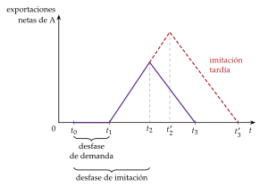
Fuente: elaboración propia a partir de Posner (1961).
Ciclo del producto (Vernon, 1966)
La intensidad factorial de un bien cambia a lo largo de su vida:
introducción: el producto nuevo exige I+D, trabajo cualificado y cercanía a consumidores de renta alta; se produce en el país innovador, que lo consume y empieza a exportarlo;
madurez: la tecnología se conoce, la producción se estandariza y la demanda crece; producen otros países desarrollados, a menudo con inversión directa [ver tema 3.B.18], y bajan las exportaciones del innovador;
estandarización: ya no hace falta trabajo cualificado y la producción pasa a los países de salarios bajos, que exportan; el innovador pasa a importar.
La ventaja comparativa es dinámica: con las mismas dotaciones, el patrón de comercio cambia con la edad del producto (gráfico 2).
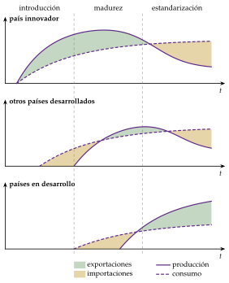
Fuente: elaboración propia a partir de Vernon (1966) y de la ficha del ciclo del producto en ProvenModels.
Demanda representativa y demandas solapadas (Linder, 1961)
Idea: Linder (1961) separa los productos primarios, cuyo comercio explican las dotaciones, de las manufacturas, cuyo comercio explica la demanda. Un país solo llega a exportar con éxito una manufactura si antes tiene en casa una demanda grande de ella, su demanda representativa: es el mercado interior el que lleva a los empresarios a descubrir el producto, a mejorarlo y a alcanzar la escala.
Demandas solapadas: la renta por habitante decide la gama de calidades que demanda un país (más renta, calidades más altas). 2 países comercian las manufacturas cuyas calidades caen en el tramo en que se solapan sus demandas (gráfico 3): cuanto más parecidas son sus rentas por habitante, mayor es el solape y más comercian.
Implicaciones:
el comercio de manufacturas es más intenso entre países de renta parecida, como se observa entre los desarrollados;
es comercio de calidades de la misma industria: intraindustrial y vertical;
y la desigualdad dentro de cada país amplía su gama de calidades y le permite comerciar con países más distintos.
Evidencia: las pruebas con datos agregados dieron resultados mixtos, porque mezclan el comercio de todas las industrias y la distancia (los países próximos se parecen en renta). Con datos por sectores y controlando los determinantes del comercio interindustrial, los países de renta por habitante parecida comercian más entre sí, como predice Linder.
Valoración: anticipa 2 resultados de la nueva teoría, el efecto del mercado doméstico de Krugman (1980) (I.3) y el comercio de calidades, pero sin un modelo de equilibrio. A diferencia de Falvey, que explica las calidades por la oferta (las dotaciones), Linder las explica por la demanda (la renta).
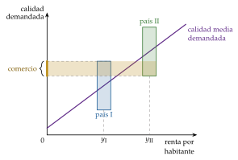
Calidades y ventaja comparativa (Falvey, 1981)
Idea: es el modelo que menos se aleja de la teoría tradicional, y por eso se llama neo-Heckscher-Ohlin: mantiene la competencia perfecta y los rendimientos constantes y solo añade calidades. Aunque es posterior a Krugman (1979), se cuenta entre los antecedentes porque es la forma más sencilla de explicar el comercio intraindustrial sin salir de la tradición neoclásica.
Supuestos: 2 países, \(A\) y \(B\), con la misma tecnología; cada industria produce un continuo de calidades, indexadas por \(\alpha\); producir una unidad de calidad \(\alpha\) exige una unidad de trabajo y \(\alpha\) de capital, de modo que las calidades altas son intensivas en capital; el capital es específico de la industria (móvil entre sus calidades, no entre industrias) y el trabajo, móvil.6
Desarrollo: con competencia perfecta, el precio de cada calidad es su coste, \[p_i(\alpha)=w_i+\alpha\,r_i,\qquad i=A,B.\] Si \(A\) es abundante en capital, \(r_A/w_A<r_B/w_B\) (con \(w_A>w_B\) y \(r_A<r_B\)), las 2 rectas se cortan en la calidad frontera \(\alpha_0=(w_A-w_B)/(r_B-r_A)\): \(B\) produce más barato las calidades \(\alpha<\alpha_0\) y \(A\) las \(\alpha>\alpha_0\) (gráfico 4).
Implicaciones: si en los 2 países se demandan calidades altas y bajas, hay comercio dentro de la industria, y sigue a Heckscher-Ohlin: el país abundante en capital exporta las calidades altas, intensivas en capital, y el abundante en trabajo, las bajas.7
Valoración: explica el comercio intraindustrial vertical con las herramientas tradicionales, pero no el horizontal, ni el que se da entre países con las mismas dotaciones. Con costes fijos de calidad y oligopolio, la explicación es la de Shaked y Sutton (II.2).
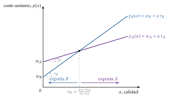
Las 4 preguntas en los antecedentes
Las implicaciones de cada uno se resumen en las mismas 4 preguntas que en los modelos de la nueva teoría (tabla 2).
| Modelo | ¿Por qué se comercia? | ¿Qué produce cada país? | ¿A qué relación real de intercambio? | ¿Quién gana? |
|---|---|---|---|---|
| Kravis (1956) | Por la disponibilidad: lo que un país no tiene o no sabe hacer | Lo que tiene disponible; importa el resto | No la determina | Los 2, por acceder a bienes que no tendrían |
| Posner (1961) | Por el desfase entre la imitación y la demanda | El innovador, el bien nuevo, hasta que lo imitan | Favorable al innovador mientras dura el desfase | El innovador, de forma temporal; la imitación erosiona su ventaja |
| Vernon (1966) | Porque la intensidad factorial cambia con la vida del producto | El innovador, en la introducción; otros desarrollados, en la madurez; los países en desarrollo, en la estandarización | No la determina | El innovador al principio; después, los países a los que se traslada la producción |
| Linder (1961) | Por la demanda representativa y el solape de las demandas | Las manufacturas para las que tiene una demanda interior grande | No la determina (no hay modelo de precios) | Los consumidores, por más calidades; más los de países de renta parecida |
| Falvey (1981) | Por las dotaciones, como en Heckscher-Ohlin | El abundante en capital, las calidades altas; el abundante en trabajo, las bajas | La de Heckscher-Ohlin: oferta y demanda relativas | Como en Heckscher-Ohlin, el factor usado con intensidad en las calidades que exporta cada país |
Fuente: elaboración propia a partir de los modelos citados.
I.2. Modelo de referencia (Krugman, 1979)
a) Idea
Krugman (1979) muestra que 2 elementos bastan para que haya comercio entre países idénticos:
rendimientos crecientes internos a la empresa (costes fijos), por los que cada variedad se produce en un solo sitio;
y una demanda de bienes diferenciados: los consumidores de los 2 países quieren las variedades de los 2.
Juntos dan una estructura de competencia monopolística [ver tema 3.A.18] y un comercio que es, por construcción, intraindustrial. La idea de que la escala podía causar comercio estaba ya en Graham (1923) y en Ohlin (1933); faltaba un modelo de equilibrio.
Presentamos primero la versión con elasticidad de sustitución constante, la de Dixit y Stiglitz (1977),8 que es la de Krugman (1980) sin costes de transporte y la que usa hoy casi toda la literatura, y después la original de 1979, con elasticidad variable.
b) Modelo
i) Supuestos
Estructura de mercado: la de la competencia monopolística [ver tema 3.A.18], que parte de la misma lista de supuestos que todas las estructuras de mercado [ver tema 3.A.16] y levanta el del producto homogéneo:
agentes racionales e información perfecta (se mantienen);
producto diferenciado (se levanta): cada empresa produce una sola variedad, sustitutiva cercana pero no perfecta de las demás;
muchas empresas (se mantiene en parte): ninguna tiene en cuenta a las demás y cada una toma el índice de precios como dado, pero es monopolista de su variedad y fija su precio;
libre entrada y salida (se mantiene).
Preferencias: \(L\) consumidores idénticos, que son también los trabajadores, con las preferencias de Dixit y Stiglitz [ver tema 3.A.18]: \[U=\Big[\sum_{i=1}^{n}x_i^{\rho}\Big]^{1/\rho},\qquad \rho\equiv\frac{\sigma-1}{\sigma},\quad \sigma>1,\] donde \(x_i\) es el consumo de la variedad \(i\), \(n\) el número de variedades y \(\sigma\) la elasticidad de sustitución entre 2 variedades cualesquiera.
Preferencia por la variedad: si el consumidor reparte una cantidad total \(X\) entre \(n\) variedades, \(x_i=X/n\) y \(U=n^{\frac{1}{\sigma-1}}X\): con la misma cantidad está mejor con más variedades, y tanto más cuanto menor es \(\sigma\) (con \(\sigma\to\infty\) las variedades son sustitutivos perfectos y la variedad no vale nada).
Se pide \(\sigma>1\) para que la demanda de cada variedad sea elástica y su monopolista tenga un precio óptimo finito; la convexidad de las curvas de indiferencia solo exige \(\sigma>0\).9
Tecnología: un solo factor, el trabajo, con salario \(w\). Producir \(q\) unidades de una variedad exige \(F+c\,q\) unidades de trabajo, un coste fijo \(F\) y un requerimiento marginal \(c\), iguales para todas las variedades: \[C(q)=w\,(F+c\,q),\qquad \mathrm{CMe}(q)=w\Big(c+\frac{F}{q}\Big),\qquad \mathrm{CMg}=w\,c.\] El coste medio baja con la producción de la empresa: hay economías de escala internas [ver tema 3.A.12].10
Lo que añade el comercio: 2 países, \(A\) y \(B\), con la misma tecnología y las mismas preferencias y un solo factor, de modo que no hay ninguna fuente de ventaja comparativa; solo pueden diferir en su tamaño, \(L_A\) y \(L_B\). El comercio no tiene costes (los de transporte se añaden en el apartado I.3).
ii) Desarrollo
Con elasticidad de sustitución constante (CES).
La demanda de cada variedad. Con renta \(w\) por trabajador, todo el gasto va a las variedades y la demanda es la de Dixit-Stiglitz [ver tema 3.A.18] (la derivación, en el anexo A): \[\tag{1} x_i=\frac{w}{P}\left(\frac{p_i}{P}\right)^{-\sigma},\qquad P\equiv\Big[\sum_{j=1}^{n}p_j^{\,1-\sigma}\Big]^{\frac{1}{1-\sigma}},\] donde \(P\) es el índice de precios de las variedades. La demanda de la variedad \(i\):
aumenta con la renta, \(w\);
disminuye con su precio, \(p_i\); con muchas variedades, cada empresa toma \(P\) como dado y su demanda tiene elasticidad \(\sigma\);
aumenta con el índice de precios, \(P\) (es proporcional a \(P^{\sigma-1}\)): si las demás se encarecen, la \(i\) se abarata en términos relativos;
y la elasticidad de sustitución \(\sigma\) la hace más elástica, pero no la desplaza en un sentido fijo: con \(\sigma\) más alto sube la demanda de las variedades más baratas que el índice (\(p_i<P\)) y baja la de las más caras.
El precio. Cada empresa maximiza su beneficio tomando \(P\) como dado: \[\begin{array}{rl}\displaystyle \max_{p_i} & \displaystyle B_i=(p_i-c\,w)\,L\,x_i(p_i)-w\,F\end{array}\] La condición \(\mathrm{IMg}=\mathrm{CMg}\) da la regla del margen del monopolista [ver tema 3.A.17]:
\[p^*=\frac{\sigma}{\sigma-1}\,c\,w\quad\Longleftrightarrow\quad \frac{p^*-c\,w}{p^*}=\frac{1}{\sigma}\tag{2}\]
El precio es un margen constante, \(\frac{\sigma}{\sigma-1}\), sobre el coste marginal, que baja cuanto más sustituibles son las variedades (mayor \(\sigma\)): cuanto mejores sustitutivos tiene una variedad, menos poder de mercado tiene su productor.
La libre entrada. Entran empresas hasta que el beneficio es nulo, \(p^*=\mathrm{CMe}(q^*)\): \(\frac{\sigma}{\sigma-1}\,c\,w=w\,(c+F/q^*)\), de donde \[q^*=\frac{(\sigma-1)\,F}{c}.\] La escala de cada empresa crece con \(F/c\) (más economías de escala que aprovechar) y con \(\sigma\) (con menos margen hay que vender más para cubrir el coste fijo), y no depende del tamaño del mercado.
El mercado de trabajo. Las \(n\) empresas emplean a todos los trabajadores, \(L=n\,(F+c\,q^*)=n\,\sigma F\): \[n^*=\frac{L}{\sigma F}.\] El número de variedades es proporcional al tamaño del país; el vaciado de cada variedad, \(q^*=L\,x^*\), da el consumo por persona de cada una.
La apertura. Si \(A\) y \(B\) se abren al comercio sin costes de transporte, es como si se sumaran sus poblaciones:
el precio relativo al salario, \(p^*/w\), y la escala de cada empresa, \(q^*\), no cambian;
cada país sigue produciendo \(n_k^*=L_k/(\sigma F)\) variedades, distintas de las del otro: a ninguna empresa le conviene repetir una variedad que ya se produce, porque se repartiría su demanda. Cada empresa prefiere ser la única que vende su pequeña variedad, como dice el refrán «más vale ser cabeza de ratón que cola de león»;
los consumidores de cada país disponen ahora de \(n_A^*+n_B^*\) variedades, y cada país gasta en las del otro la parte que estas representan. Las importaciones de \(A\) son \[M_A=\frac{n_B}{n_A+n_B}\,w\,L_A=\frac{w\,L_A\,L_B}{L_A+L_B}=M_B:\] el comercio es equilibrado, intraindustrial y, para un tamaño total dado, mayor cuanto más parecidos son los países.11
El bienestar. Con todos los precios iguales, \(P=p^*\,n^{\frac{1}{1-\sigma}}\), y el salario real en términos del índice de precios es \[\frac{w}{P}=\frac{\sigma-1}{\sigma\,c}\;n^{\frac{1}{\sigma-1}}.\] Con 2 países iguales, la apertura duplica \(n\) y multiplica el salario real por \(2^{\frac{1}{\sigma-1}}\): toda la ganancia viene de la variedad.
Gráficamente, es el equilibrio de Chamberlin con una demanda isoelástica: el ingreso marginal corta al coste marginal en \(q^*\), el precio es el margen sobre \(c\,w\) y la libre entrada desplaza la demanda de cada variedad hasta que es tangente al coste medio (anexo A).
Con elasticidad variable: la versión original.
Con la CES, el margen es constante y la apertura no cambia ni los precios ni la escala: solo trae variedad. Krugman supone una utilidad aditiva, \(U=\sum_iv(x_i)\) con \(v'>0\) y \(v''<0\), en la que la elasticidad de la demanda de cada variedad, \(|\varepsilon_{x,p}(x)|=-v'(x)/[v''(x)\,x]\), disminuye con el consumo por persona \(x\): cuanto más se consume de una variedad, menos sensible es el consumidor a su precio.
El equilibrio simétrico se resume en 2 curvas en el plano \((x,\ p/w)\) (gráfico 6):
la curva PP, de la maximización del beneficio (profit maximization), creciente: con más consumo por persona, la demanda es menos elástica y el margen mayor, \[\frac{p}{w}=c\,\frac{|\varepsilon_{x,p}(x)|}{|\varepsilon_{x,p}(x)|-1};\]
la curva ZZ, del beneficio nulo (zero profit), con \(q=L\,x\), decreciente: con más consumo por persona, cada empresa vende más y reparte el coste fijo entre más unidades, \[\frac{p}{w}=c+\frac{F}{L\,x}.\]
Su corte da \(x\) y \(p/w\), y el mercado de trabajo, el número de empresas, \(n=L/(F+c\,L\,x)\).
Gráficamente, en autarquía (gráfico 5), paso a paso:
se dibujan los ejes, con el consumo por persona de cada variedad, \(x\), y el precio relativo al salario, \(p/w\), y la recta \(p/w=c\), el coste marginal, por debajo de la cual ninguna empresa vende;
se traza PP, creciente: a más consumo por persona, demanda menos elástica y margen mayor;
se traza ZZ, decreciente y asintótica a \(c\): a más consumo por persona, más ventas por empresa y menos coste fijo por unidad;
el corte, \(E_0\), es el equilibrio de autarquía, con \(x_0\) y \((p/w)_0\).
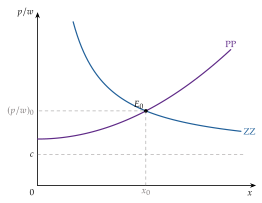
Fuente: elaboración propia a partir de Krugman (1979) y Feenstra (2016, cap. 5).
Con elasticidad variable: la apertura.
La apertura (gráfico 6, que parte del anterior). Integrarse con un país igual es pasar de \(L\) a \(2L\): cada empresa vende ahora al doble de consumidores, nacionales y extranjeros, que demandan todas las variedades en la misma proporción. Sobre el gráfico de autarquía se añade:
ZZ baja a ZZ\('\) (para el mismo \(x\), cada empresa vende el doble y el coste fijo por unidad es menor), y PP no cambia, porque no depende de \(L\);
el nuevo corte, \(E_1\), está sobre la misma PP, abajo y a la izquierda: la economía se desliza por PP de \(E_0\) a \(E_1\).
En el nuevo equilibrio:
baja el consumo por persona de cada variedad, \(x\), porque el gasto se reparte entre más variedades;
bajan el margen y el precio relativo, \(p/w\): con menos consumo por variedad, la demanda es más elástica. Es el efecto procompetitivo del comercio, que sube el salario real;
sube la escala de cada empresa: como \(p/w-c=F/q\) baja, \(q\) aumenta y las empresas aprovechan mejor las economías de escala (efecto escala);
baja el número de empresas de cada país, \(n=L/(F+c\,q)\) (racionalización), aunque el consumidor dispone de más variedades que en autarquía, \(2n'>n\): algunas empresas cierran, pero el modelo, con empresas iguales, no dice cuáles.
Qué añade la elasticidad variable. Con la CES, el margen y el tamaño de cada empresa no cambian al abrirse, y la única ganancia es la variedad. Con la elasticidad decreciente, la apertura da además precios más bajos por la competencia, empresas más grandes y menos empresas por país: separa 3 fuentes de ganancia (variedad, procompetitiva y escala) y crea ganadores y perdedores entre las empresas.
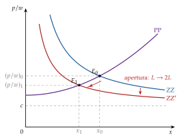
Fuente: elaboración propia a partir de Krugman (1979) y Feenstra (2016, cap. 5).
¿Y si la elasticidad de sustitución fuese constante? Con la CES, la elasticidad de la demanda de cada variedad es \(\sigma\) para cualquier consumo por persona, y la condición de la curva PP da \(p/w=c\,\sigma/(\sigma-1)\): PP es horizontal (gráfico 7). La apertura baja ZZ igual que antes, pero el nuevo corte queda a la misma altura:
el margen y el precio relativo, \(p/w\), no cambian: no hay efecto procompetitivo;
como \(p/w-c=F/(L\,x)\) no cambia, tampoco cambia lo que vende cada empresa, \(q=L\,x=(\sigma-1)F/c\): no hay efecto escala. Lo que cambia es el consumo por persona de cada variedad, que se reduce a la mitad, \(x_1=x_0/2\), porque cada empresa reparte las mismas ventas entre el doble de consumidores;
cada país sigue teniendo \(n=L/(\sigma F)\) empresas: no hay racionalización;
y cada consumidor dispone del doble de variedades: toda la ganancia es de variedad, como en el desarrollo con elasticidad constante.
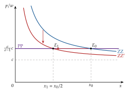
El efecto procompetitivo con 2 monopolistas. El monopolio basta, por sí solo, para que haya comercio intraindustrial. Supongamos 2 países, \(A\) y \(B\), cada uno con un monopolista que produce el mismo bien (gráfico 8):
en autarquía, cada empresa produce \(Q_0\), donde \(\mathrm{IMg}=\mathrm{CMg}\), y cobra \(p_M\): producir más le obligaría a bajar el precio de todas las unidades que vende, no solo el de las adicionales, y el ingreso marginal quedaría por debajo del coste marginal;
si puede comerciar, a la empresa de \(A\) le interesa producir más si puede vender esas unidades en \(B\) sin rebajar el precio de las que vende en casa: cada unidad exportada a un precio cercano a \(p_M\) deja \(p_M-\mathrm{CMg}>0\), hasta \(Q_1\). Gana a costa del beneficio del monopolista de \(B\) en su mercado, y la de \(B\) hace lo mismo en el mercado de \(A\);
podría pensarse que los consumidores no ganan, porque sigue habiendo un solo bien y además se paga el transporte. Pero, al invadirse los mercados, aumentan las unidades ofrecidas en cada uno y el precio baja: se pasa del monopolio a un oligopolio, a la Cournot o a la Bertrand, más cerca de la competencia.
Es el efecto procompetitivo del comercio internacional en su forma más sencilla; con competencia en cantidades es el dumping recíproco (II.1).
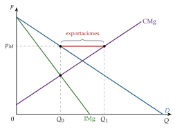
Fuente: elaboración propia a partir de Brander (1981).
iii) Implicaciones
¿Por qué se comercia? Por la estructura de mercado: la preferencia por la variedad hace que se demanden las variedades de todos, y las economías de escala internas, que cada una se produzca en un solo sitio. No hace falta ninguna diferencia entre países.
¿Qué produce cada país? Cada uno, \(n_k=L_k/(\sigma F)\) variedades distintas de las del otro, en proporción a su tamaño; se comercian variedades de un mismo bien: comercio intraindustrial, mayor cuanto más parecidos son los países en tamaño. Qué variedades produce cada país queda indeterminado.
¿A qué relación real de intercambio? Con 2 países idénticos, los salarios y los precios son iguales y la relación real de intercambio es 1: la ganancia no viene de los precios relativos sino del número de variedades. Con países de distinto tamaño y costes de transporte, el país grande paga salarios más altos (I.3).
¿Quién gana? Los consumidores de los 2 países, por la mayor variedad y, con elasticidad variable, por los menores precios. No hay conflicto distributivo entre factores, porque hay uno solo: pierden solo las empresas que cierran. Por eso los costes de ajuste del comercio intraindustrial son menores que los del interindustrial, en el que los factores tienen que cambiar de industria.
c) Evidencia empírica
La medida del comercio intraindustrial. Hay que resolver 3 problemas: qué es una industria, cómo medir el comercio en las 2 direcciones y cómo distinguir sus tipos.
Qué es una industria. Es el problema central, porque el resultado depende de él: con una definición amplia, todo comercio parece intraindustrial, y con una muy fina, ninguno.
En teoría, una industria agrupa bienes que son sustitutivos cercanos en la demanda (el mismo uso) y que se producen con técnicas e intensidades factoriales parecidas (el mismo proceso). Los 2 criterios no siempre coinciden: los muebles de madera y los de metal sirven para lo mismo y se hacen de forma distinta.
En la práctica, se usan las clasificaciones estadísticas de productos, que tienen varios niveles de desagregación. La Clasificación Uniforme para el Comercio Internacional (CUCI, revisión 4, de Naciones Unidas) va de la sección (1 dígito) a la división (2), el grupo (3), el subgrupo (4) y la partida básica (5); por ejemplo, la sección 5, productos químicos, la división 54, productos medicinales y farmacéuticos, y el grupo 542, medicamentos, el del enganche. El Sistema Armonizado (SA) llega a 6 dígitos y la nomenclatura de la Unión Europea, a 8 (10 en el TARIC). Lo habitual es medir con la CUCI a 3 dígitos o a 5, o con el SA a 6.
El sesgo de agregación: cuanto más agregada es la clasificación, más comercio intraindustrial se mide, porque en un mismo grupo se compensan exportaciones e importaciones de bienes distintos, a veces con intensidades factoriales muy diferentes. Por eso Finger (1975) sostuvo que buena parte del comercio intraindustrial medido es comercio interindustrial de Heckscher-Ohlin mal clasificado. En el comercio de España con Francia, el índice baja de 0,63 con la CUCI a 3 dígitos a 0,48 a 5 dígitos y a 0,46 con el SA a 6 (tabla 3). Desagregar tampoco es la solución perfecta: con una clasificación muy fina se separan variedades del mismo bien.
La agregación geográfica: el índice multilateral, con las exportaciones e importaciones de un país frente al mundo, compensa lo que se exporta a un socio con lo que se importa de otro, y sale mayor que el bilateral. Lo correcto es calcularlo por pares de socio y producto.
y cómo medirlo. Con \(X_k\) y \(M_k\) las exportaciones y las importaciones de la industria \(k\), el índice de Grubel-Lloyd, que vale 0 si todo el comercio de la industria va en una dirección (interindustrial) y 1 si se reparte por igual en las 2 (intraindustrial), es
\[GL_k\equiv 1-\frac{|X_k-M_k|}{X_k+M_k}=\frac{2\min\{X_k,M_k\}}{X_k+M_k}\in[0,1]\tag{3}\]
La segunda forma dice lo mismo de otro modo: es el comercio que se compensa en las 2 direcciones, \(\min\{X_k,M_k\}\), en proporción a la media del comercio de la industria, \((X_k+M_k)/2\), que es el índice que usan Krugman, Obstfeld y Melitz (2018, cap. 8). Para el país, se pondera cada industria por su peso en el comercio, \(GL=\sum_k\big[(X_k+M_k)-|X_k-M_k|\big]\big/\sum_k(X_k+M_k)\).12
El desequilibrio comercial: si un país tiene un saldo global distinto de 0, el índice agregado no puede llegar a 1 aunque todo su comercio sea intraindustrial; Aquino (1978) propuso corregirlo, aunque no hay acuerdo sobre la corrección.
Horizontal o vertical. Con el valor unitario (el precio por kilo) de las exportaciones y de las importaciones de cada producto se separan los 2 tipos: si difieren poco (menos de un 15 % en el criterio habitual), el comercio es de variedades de calidad parecida, intraindustrial horizontal, el de Krugman; si difieren más, es de calidades distintas, intraindustrial vertical, el de Falvey, Linder o Shaked y Sutton. En el Reino Unido, el vertical era la mayor parte.
El comercio intraindustrial marginal: el índice de Grubel-Lloyd mide niveles, pero para los costes de ajuste importa si los aumentos del comercio son intraindustriales. Brülhart (1994) lo mide con el mismo índice aplicado a las variaciones, \(A_k=1-|\Delta X_k-\Delta M_k|/(|\Delta X_k|+|\Delta M_k|)\): cuanto más se acerca a 1, más se reparte el ajuste dentro de cada industria y menos tienen que cambiar de industria los factores.
Lo que dicen los datos. En 2006, el 27 % del comercio mundial era intraindustrial con la CUCI a 5 dígitos y el 44 % a 3 dígitos; había crecido desde los años 60 y era mucho mayor entre países de renta alta y media que en los de renta baja.13 Es mayor entre economías desarrolladas, grandes, con gustos parecidos y próximas.14
Las ganancias por variedad se pueden cuantificar: entre 1972 y 2001 el número de variedades importadas por Estados Unidos se triplicó, una ganancia para los consumidores del 2,6 % del PIB.
Los efectos escala y de cierre de empresas se han medido con la liberalización entre Canadá y Estados Unidos; como el cierre no es al azar, sino de las menos productivas, se cuentan con el modelo de Melitz (I.4).
| Comercio | CUCI, 3 dígitos | CUCI, 5 dígitos | SA, 6 dígitos |
|---|---|---|---|
| Mundo, 2006 | 0,44 | 0,27 | — |
| España con sus 50 principales socios, 2025 | 0,44 | 0,33 | — |
| España-Alemania, 2025 | 0,62 | 0,52 | — |
| España-Francia, 2025 | 0,63 | 0,48 | 0,46 |
Fuente: mundo, Brülhart (2009); España, elaboración propia con datos de Eurostat (2026a), por pares de socio y producto (no es una cifra oficial).
d) Valoración
Aportación: explica con un modelo de equilibrio los 3 hechos que la teoría tradicional no explicaba (comercio intraindustrial, entre países parecidos y creciente) y añade 3 fuentes de ganancia que no dependen de la ventaja comparativa: variedad, precios y escala.
No sustituye a la teoría tradicional: en el equilibrio integrado de Helpman y Krugman (1985), la ventaja comparativa decide la especialización y el saldo neto de cada industria, y la estructura de mercado, el comercio intraindustrial.
Límites:
el patrón de comercio queda indeterminado: se sabe cuántas variedades produce cada país, no cuáles;
con la CES, el margen es constante y la apertura no tiene efecto procompetitivo; con la elasticidad variable sí, pero sin soluciones cerradas;
el comercio no tiene costes, de modo que da igual dónde se instale cada empresa (lo corrige Krugman (1980) en el apartado siguiente);
y, sobre todo, todas las empresas son iguales, cuando en los datos solo exportan unas pocas (I.4).
I.3. Extensiones: costes iceberg y efecto del mercado doméstico (Krugman, 1980)
Una vez visto el modelo sin costes de comercio, pasamos a lo que cambia cuando comerciar cuesta: importa dónde se instala cada empresa y, con ello, el tamaño de cada mercado.
Costes de transporte de tipo iceberg
Krugman (1980) introduce costes de transporte de tipo iceberg: para que llegue una unidad al otro país hay que enviar \(\tau>1\); el resto, \(\tau-1\), «se derrite» por el camino.15 Con márgenes constantes, el precio en destino de una variedad exportada es \(\tau\) veces el de la que se vende en casa, \(p_x=\tau\,p^*\), y las variedades importadas se consumen menos que las nacionales.
El efecto del mercado doméstico
Idea: si 2 países difieren en el tamaño de su demanda de un bien diferenciado, las empresas prefieren instalarse en el mercado grande, para vender allí sin pagar el transporte y exportar desde él al pequeño.
Resultado (home market effect):
el país con el mercado interior mayor de un bien concentra una parte más que proporcional de sus empresas y es exportador neto de ese bien: los países tienden a exportar los bienes para los que tienen un mercado interior relativamente grande, como había intuido Linder (1961) (I.1);
y, si hay un solo sector con rendimientos crecientes, el país grande paga salarios más altos: para que el pequeño conserve alguna industria, tiene que ser más barato.
Hacen falta las 2 cosas: economías de escala (si no, se produciría en todas partes) y costes de transporte (si no, daría igual dónde). Es el germen de la nueva geografía económica (III.1), en la que el tamaño del mercado deja de ser dado.
Integración con la ventaja comparativa y empresas multiproducto
Con 2 factores y 2 industrias: si una industria es diferenciada, el país abundante en el factor que usa intensivamente es exportador neto de ella (comercio interindustrial, por las dotaciones) y, a la vez, importa variedades extranjeras (comercio intraindustrial, por la escala). Es el equilibrio integrado de la introducción.
Empresas multiproducto y producción en varios países: con costes de comerciar, a una empresa le conviene producir otra de sus variedades en el extranjero, porque gana cuota sin canibalizar la que produce en casa. La inversión directa recíproca no elimina el comercio intraindustrial, porque cada filial vende en los 2 mercados [ver tema 3.B.18].
La gravedad: con preferencia por la variedad y costes iceberg, cada país compra a todos en proporción a su tamaño y menos cuanto más lejos están; es el primer microfundamento de la ecuación de gravedad (III.2).
Implicaciones
¿Por qué se comercia? Como en 1979, por la variedad y la escala; con costes de transporte, además, por el tamaño del mercado interior, que atrae a las empresas.
¿Qué produce cada país? El país con la demanda mayor de un bien diferenciado produce una parte más que proporcional de sus variedades y es exportador neto de ese bien (efecto del mercado doméstico); con 2 industrias, el pequeño se especializa en la homogénea.
¿A qué relación real de intercambio? Con un solo sector, favorable al país grande: paga salarios más altos, de modo que sus variedades se venden más caras en términos de las del pequeño.
¿Quién gana? Los 2 países, por la variedad, pero más el grande: tiene más variedades sin pagar el transporte y salarios más altos. El pequeño paga el transporte de una parte mayor de lo que consume.
I.4. Heterogeneidad empresarial: el modelo de Melitz (2003)
Una vez visto por qué comercian los países con empresas iguales, pasamos a ver qué empresas comercian. La conclusión: solo exportan las más productivas, y abrirse sube la productividad del país porque la cuota de mercado pasa de las empresas menos productivas a las más productivas.
a) Idea
Los microdatos de empresas mostraron 3 hechos que la nueva teoría, con empresas iguales, no explicaba:
exportar es raro: de los 5,5 millones de empresas de Estados Unidos en 2000, solo el 4 % exportaba (el 18 % en las manufacturas, en 2002), y el 10 % de mayores exportadoras hacía el 96 % de las exportaciones;
las exportadoras son distintas: dentro de la misma industria tienen un 97 % más de empleo y un 108 % más de ventas, un 11 % más de valor añadido por trabajador y pagan un 6 % más; y la mayor productividad precede a la exportación (autoselección), no la sigue;
y abrirse reasigna: tras una liberalización crecen las empresas productivas, cierran las menos productivas y sube la productividad de la industria.
Melitz (2003) extiende el modelo de Krugman con elasticidad constante en 2 puntos: las empresas difieren en productividad y exportar exige un coste fijo adicional. Es el punto de partida de la «novísima» teoría del comercio.
b) Modelo
i) Supuestos
Preferencias: las de Dixit-Stiglitz con elasticidad constante \(\sigma>1\) (I.2), de modo que cada empresa cobra el mismo margen, \(\frac{\sigma}{\sigma-1}\), sobre su coste marginal.
Productividad heterogénea: la empresa de productividad \(\varphi\) necesita \(1/\varphi\) unidades de trabajo por unidad producida; las más productivas tienen un coste marginal menor, \(w/\varphi\).
Entrada: hay infinitos entrantes posibles. Para entrar se paga un coste hundido \(w\,F^e\) y solo entonces se descubre la productividad, sacada de una distribución \(G(\varphi)\); con ella, la empresa decide si produce o se va.16
Costes de cada mercado, por separado:
vender en el mercado interior: \(C^d(q)=w\,\big(F^d+q/\varphi\big)\);
exportar: \(C^x(q_x)=w\,\big(F^x+\tau\,q_x/\varphi\big)\), con un coste fijo de exportar \(F^x\) (información, adaptación del producto, canales de distribución, homologaciones), que se paga sea cual sea el volumen exportado, y el coste iceberg \(\tau>1\) (I.3), que multiplica el coste variable de cada unidad vendida fuera.
2 países simétricos, con el trabajo como único factor y libre entrada.
ii) Desarrollo
En autarquía.
El precio: cada empresa cobra el margen constante sobre su coste marginal, \(p(\varphi)=\frac{\sigma}{\sigma-1}\,\frac{w}{\varphi}\): las más productivas son más baratas y venden más.
El beneficio en el mercado interior. Con la demanda CES, el ingreso de la empresa es \(wL\,\big(p(\varphi)/P\big)^{1-\sigma}\) y su beneficio operativo es la parte \(1/\sigma\) del ingreso: \[B^d(\varphi)=\frac{wL}{\sigma}\left(\frac{\rho\,\varphi\,P}{w}\right)^{\sigma-1}-w\,F^d.\] Es una recta creciente en \(\varphi^{\sigma-1}\), con ordenada en el origen \(-wF^d\), cuya pendiente crece con el tamaño del mercado, \(L\), y con el índice de precios en términos del salario, \(P/w\): cuantas menos y más caras son las competidoras, más vende cada una.
Las 2 condiciones del equilibrio (anexo B):
beneficio nulo de la empresa marginal: la productividad de corte de autarquía, \(\varphi^*_{\mathrm{aut}}\), cumple \(B^d(\varphi^*_{\mathrm{aut}})=0\), y las empresas con \(\varphi<\varphi^*_{\mathrm{aut}}\) salen nada más conocer su productividad;
libre entrada: el beneficio que espera quien paga \(wF^e\) (la probabilidad de sobrevivir por el beneficio medio de las que sobreviven) es igual a ese coste.
Las 2 juntas determinan el umbral y el índice de precios; el mercado de trabajo da después el número de empresas.
Gráficamente (gráfico 9), en el eje horizontal se pone \(\varphi^{\sigma-1}\), para que el beneficio sea una recta, y paso a paso:
la recta del beneficio interior, \(B^d_{\mathrm{aut}}\), que parte de \(-wF^d\);
su corte con el eje, el umbral \((\varphi^*_{\mathrm{aut}})^{\sigma-1}\);
a la izquierda del umbral, las empresas salen: su beneficio operativo es 0, no negativo, porque no pagan el coste fijo de producir (en rojo, sobre el eje);
la línea del coste hundido, \(wF^e\): solo recuperan lo que pagaron por entrar las que ganan más que él; las demás producen con beneficio operativo positivo, pero pierden en conjunto. La libre entrada hace que, en promedio, lo que ganan las afortunadas compense lo que pierden las demás.
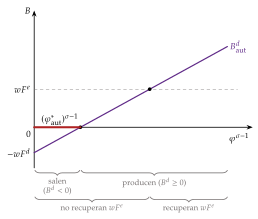
Fuente: elaboración propia a partir de Melitz (2003) y Melitz y Redding (2014, fig. 1.1).
Con comercio.
Exportar da un beneficio adicional, otra recta en \(\varphi^{\sigma-1}\), que parte más abajo (\(-wF^x\)) y crece más despacio, porque el iceberg reduce lo que deja cada unidad exportada en \(\tau^{1-\sigma}<1\): \[B^x(\varphi)=\tau^{1-\sigma}\,\frac{wL}{\sigma}\left(\frac{\rho\,\varphi\,P}{w}\right)^{\sigma-1}-w\,F^x.\] Igualando a cero las 2 rectas se obtienen los 2 umbrales con comercio, el de supervivencia, \(\varphi^*\), y el de exportación, \(\varphi^*_x\):
\[B^d(\varphi^*)=0,\qquad B^x(\varphi^*_x)=0\quad\Longrightarrow\quad \varphi^*_x=\tau\left(\frac{F^x}{F^d}\right)^{\frac{1}{\sigma-1}}\varphi^*\tag{4}\]
Si \(\tau^{\sigma-1}F^x>F^d\), como confirman los datos, \(\varphi^*_x>\varphi^*\): exportar exige más productividad que producir.
Qué cambia al abrirse (gráfico 10). Las empresas que pueden exportar ganan más, entran más empresas y, para producir más, contratan más trabajo: sube el salario real (baja \(P/w\)). Eso hace girar hacia abajo la recta del beneficio interior y sube el umbral de supervivencia, de \(\varphi^*_{\mathrm{aut}}\) a \(\varphi^*\).17
El gráfico, paso a paso (gráfico 10), sobre el de autarquía:
se parte de \(B^d_{\mathrm{aut}}\) y su umbral;
la recta del beneficio interior gira hacia abajo, a \(B^d\), desde el mismo \(-wF^d\), y su corte con el eje se desplaza a la derecha, a \((\varphi^*)^{\sigma-1}\);
se añade la recta del beneficio de exportar, \(B^x\), desde \(-wF^x\) y más plana, con su corte en \((\varphi^*_x)^{\sigma-1}\);
para las que exportan, el beneficio total es la suma, \(B^d+B^x\), más empinada que \(B^d_{\mathrm{aut}}\): las 2 rectas se cortan en \(\hat\varphi\), la productividad con la que una empresa gana con comercio lo mismo que en autarquía, \(B^d(\hat\varphi)+B^x(\hat\varphi)=B^d_{\mathrm{aut}}(\hat\varphi)\);
los cortes \(\varphi^*_{\mathrm{aut}}<\varphi^*<\varphi^*_x<\hat\varphi\) separan 5 grupos de empresas.
Los 5 grupos:
\(\varphi<\varphi^*_{\mathrm{aut}}\): no producían en autarquía ni producen ahora;
\(\varphi^*_{\mathrm{aut}}\leq\varphi<\varphi^*\): producían y cierran con la apertura (efecto selección);
\(\varphi^*\leq\varphi<\varphi^*_x\): siguen vendiendo solo en su mercado, venden menos que antes y pierden beneficio, porque \(B^d<B^d_{\mathrm{aut}}\);
exportan, \(\varphi\geq\varphi^*_x\), y venden en los 2 mercados más que antes solo en el suyo, pero no todas ganan:
\(\varphi^*_x\leq\varphi<\hat\varphi\): exportan, pero ganaban más en autarquía: lo que les deja exportar no compensa lo que pierden en casa más el coste fijo de exportar;
\(\varphi\geq\hat\varphi\): exportan y ganan con el comercio: son las beneficiadas por la apertura.
Exportar no está al alcance de cualquier empresa, sino solo de las que cubren su coste fijo: para la empresa que mira fuera, «no todo el monte es orégano».
Las mismas conclusiones salen de una apertura parcial: una bajada de \(\tau\) o de \(F^x\), o más países a los que exportar.
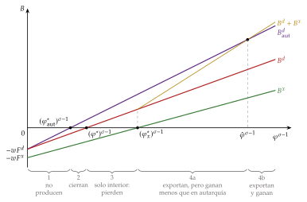
Quién gana y quién pierde, de un vistazo (gráfico 11). Si se dibuja solo el beneficio operativo que obtiene cada empresa, en autarquía y con comercio, las que no producen se quedan en 0 (y pierden el coste hundido, \(wF^e\), que ya pagaron):
primero, la curva de autarquía: 0 hasta \(\varphi^*_{\mathrm{aut}}\) y \(B^d_{\mathrm{aut}}\) desde ahí;
después, la de comercio: 0 hasta \(\varphi^*\), \(B^d\) hasta \(\varphi^*_x\) y, con un quiebro, \(B^d+B^x\) desde ahí;
entre las 2, a la izquierda de \(\hat\varphi\), lo que pierden con el comercio los grupos 2, 3 y 4a; a la derecha, lo que ganan las del grupo 4b.
El comercio reparte el beneficio hacia las más productivas: pierde la mayoría de las empresas y gana una minoría, la que concentra la mayor parte de las ventas.
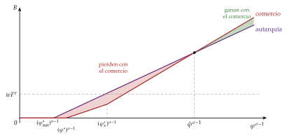
iii) Implicaciones
¿Por qué se comercia? Como en Krugman, por la variedad y la escala; pero no todas las empresas lo hacen: solo exportan las que cubren el coste fijo de exportar, \(\varphi\geq\varphi^*_x\).
¿Qué produce cada país? Las variedades de las empresas que sobreviven, \(\varphi\geq\varphi^*\), y exporta solo las de las más productivas: comercio intraindustrial, como en Krugman. Al abrirse, las exportadoras crecen y suben los salarios reales, lo que expulsa a las menos productivas, \(\varphi^*_{\mathrm{aut}}\leq\varphi<\varphi^*\): selección y reasignación de cuota y de trabajo hacia las mejores. La productividad media de la industria sube sin que ninguna empresa cambie la suya.
¿A qué relación real de intercambio? Con países simétricos es 1: los precios dependen de la productividad de cada empresa, no del país.
¿Quién gana? Los consumidores, por el salario real: una fuente nueva de ganancias, la reasignación entre empresas, además de la variedad y la escala; el bienestar sube aunque el número de variedades disponibles puede subir o bajar, porque cierran empresas nacionales y llegan las importadas. Entre las empresas, solo ganan las más productivas, \(\varphi\geq\hat\varphi\); pierden las que cierran, las que solo venden en casa y las exportadoras menos productivas (grupos 2, 3 y 4a). Hay costes de ajuste: cierres y paro en las empresas menos productivas.
¿Política? La promoción exterior que reduce \(F^x\) (información de mercados, ferias, redes en el exterior) baja el umbral de exportación y amplía la base exportadora, a costa de una selección más dura en el mercado interior.
c) Extensiones
Exportar o invertir: la inversión directa en el exterior exige un coste fijo mayor que exportar, pero ahorra el coste de transporte. Las empresas quedan ordenadas por productividad: las menos productivas cierran; después vienen las que solo venden en casa, luego las exportadoras y, en lo más alto, las que sirven el exterior con filiales [ver tema 3.B.18].
Heterogeneidad y ventaja comparativa: con 2 factores y 2 industrias, la apertura reasigna recursos dentro de cada industria y entre industrias; la selección es más intensa en las de ventaja comparativa, lo que amplía las ganancias del comercio [ver tema 3.B.5].
Márgenes variables: con demanda lineal, la competencia de las importaciones sí reduce los márgenes, y los mercados grandes tienen empresas más productivas y precios más bajos: se recupera el efecto procompetitivo de Krugman (1979).
La gravedad: con productividades que siguen una distribución de Pareto, la distancia y los costes fijos actúan sobre todo sobre el margen extensivo, cuántas empresas exportan, y no solo sobre el intensivo, cuánto exporta cada una (III.2).
Heterogeneidad en un modelo ricardiano: Eaton y Kortum (2002) plantean un modelo de Ricardo con muchos países, productividades aleatorias y costes geográficos, en competencia perfecta, que da una ecuación de gravedad y permite medir las ganancias del comercio; Bernard et al. (2003) lo llevan a la competencia en precios entre empresas y reproducen la ventaja de productividad y de tamaño de las exportadoras.
d) Evidencia empírica
El modelo reproduce los 3 hechos de partida: exportan pocas empresas, las más productivas, y la liberalización sube la productividad por selección y reasignación. La prueba natural es el acuerdo de libre comercio entre Canadá y Estados Unidos, en vigor desde 1989:
el efecto escala fue débil: los menores aranceles de Estados Unidos aumentaron alrededor de un 10 % la escala de las plantas canadienses, pero la rebaja de los aranceles de Canadá la redujo en una cuantía parecida, de modo que el efecto neto fue pequeño;
el de selección, fuerte: en las industrias canadienses con mayores rebajas de los aranceles de Canadá, el empleo cayó un 12 % y la productividad del trabajo de la industria subió un 15 %, y en las más beneficiadas por las rebajas de Estados Unidos la productividad de las plantas aumentó un 14 %.
España. En 2025 exportaron bienes 127.084 empresas, pero solo 46.229 lo hicieron con regularidad (en ese año y en los 3 anteriores), y la exportación está muy concentrada en las mayores (tabla 4): las 1.000 primeras hicieron el 65,2 %. Por tamaño, en 2024 las empresas de 250 o más empleados eran el 1,9 % de las exportadoras e hicieron el 57 % de la exportación [ver tema 4.A.8].
| Primeros exportadores | 2019 | 2025 |
|---|---|---|
| 10 | 15,0 | 13,9 |
| 100 | 39,2 | 36,2 |
| 1.000 | 66,8 | 65,2 |
| 5.000 | 87,5 | 86,9 |
Fuente: Ministerio de Economía, Comercio y Empresa (2026, tabla 13); datos de 2025, provisionales.
La curva de concentración (gráfico 12) completa la tabla: ordena las empresas exportadoras de mayor a menor y muestra qué parte del valor exportado hacen el 1 %, el 10 % o el 50 % mayores. Paso a paso:
en el eje horizontal, el porcentaje de empresas, de la mayor a la menor, en escala logarítmica, porque casi todo el valor lo hace una parte muy pequeña de ellas; en el vertical, la cuota acumulada del valor exportado;
la curva de 2019: el 1 % mayor de las exportadoras hacía el 76,7 % de la exportación, y el 10 %, el 98,6 %;
la de 2025, por debajo en todo el recorrido: el 1 % mayor hizo el 68,6 % y el 10 %, el 95,7 %;
los puntos de las 10, 100 y 1.000 primeras, que apenas se mueven (la tabla 4).
Qué ha cambiado. El número de exportadoras cayó de unas 209.000 en 2019 a unas 127.000 en 2025, y casi todas las que dejaron de exportar eran pequeñas: en 2019, el 80 % menor de las exportadoras hacía solo el 0,2 % del valor. Al desaparecer esa cola, la cuota de las mayores en número absoluto casi no cambia, pero cada percentil corresponde a menos empresas y la curva baja. La exportación no se ha concentrado más en las grandes; lo que se ha reducido es la base de exportadoras pequeñas y ocasionales.
En términos de Melitz, es lo que ocurre cuando sube el umbral de exportación, \(\varphi^*_x\), por ejemplo porque crecen los costes fijos de exportar, \(F^x\), o la incertidumbre sobre los mercados de destino: salen de la exportación las empresas que estaban cerca del umbral, que exportaban poco, y el margen extensivo (cuántas exportan) se reduce mucho más que el valor, que depende del margen intensivo de las grandes. La lectura de política es la del modelo: reducir \(F^x\) (información, promoción, redes en el exterior) es lo que amplía la base exportadora.
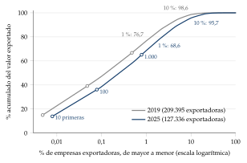
Fuente: elaboración propia con los microdatos de empresas exportadoras de la Agencia Tributaria (Secretaría de Estado de Comercio, 2026); solo agregados; 2025, provisional.
España frente a otros países europeos. Con la estadística de comercio por características de las empresas de Eurostat (TEC), que mide la concentración con la misma definición en todos los países, España está entre los países europeos con la exportación menos concentrada (gráfico 13): en 2024, sus 1.000 primeras exportadoras hicieron el 67,5 % de la exportación de bienes, como en Alemania y Polonia (65,6 %) y por encima de Italia (53,3 %), el país con la base exportadora más repartida, frente al 80 % de Francia y el 98 % de Irlanda, donde unas pocas multinacionales hacen casi toda la exportación. La concentración es mayor cuanto más pequeña es la economía y cuanto más pesan las filiales de multinacionales, algo coherente con Melitz: cuanto menor es el mercado interior, solo las empresas más productivas cubren los costes de exportar. Las cifras de Eurostat no coinciden exactamente con las de la Agencia Tributaria de la tabla 4 (las 10 primeras, el 16,6 % en 2024), porque Eurostat cuenta empresas del directorio estadístico y no operadores fiscales.
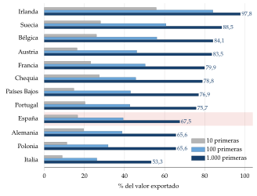
Fuente: Eurostat (2026b, ext_tec02).
e) Valoración
Aportación: pone a la empresa en el centro, explica los hechos de los microdatos y señala una fuente nueva de ganancias del comercio; es el marco de casi toda la investigación de comercio de este siglo.
Límites:
la productividad es exógena: no hay innovación ni aprendizaje por exportar;
con la CES, el margen es constante (lo corrigen Melitz y Ottaviano);
y la ganancia total del comercio no es necesariamente mayor que en los modelos anteriores: con los mismos datos de la parte del gasto que se queda en casa y de la elasticidad del comercio a sus costes, es la misma en Krugman (1980), en Melitz con distribución de Pareto y en Eaton y Kortum. Lo que cambia es de dónde sale y quién gana o pierde.
En competencia monopolística, el comercio nace de la estructura de mercado: con preferencia por la variedad y economías de escala internas, 2 países idénticos comercian variedades distintas del mismo bien y ganan por la variedad; con elasticidad decreciente, también por la competencia y la escala; con costes de transporte, el mercado grande atrae a las empresas; y con empresas heterogéneas, exportan solo las más productivas y la apertura reasigna la producción hacia ellas. Hasta aquí, sin embargo, las empresas son muchas y ninguna tiene en cuenta a las demás: falta el oligopolio.
II. Competencia oligopolista: comportamiento estratégico
En el cante (5′): el dumping recíproco (3′30″): la idea (0′30″), los supuestos (0′30″), las funciones de reacción en el mercado \(A\) con su gráfico y el efecto de \(\tau\) (1′30″), las 4 preguntas con el bienestar ambiguo (0′45″) y la remisión al arancel (0′15″); la competencia en precios y la diferenciación (1′30″), de palabra, rellenando las 3 casillas del oligopolio de la tabla de modelos. El ejemplo numérico del bienestar está en el anexo D.
Conclusión anticipada: la interacción estratégica entre pocas empresas basta para que se comercie el mismo bien homogéneo en las 2 direcciones, sin diferenciación, sin economías de escala y sin ventaja comparativa; el resultado depende, eso sí, de cómo compitan.
Nexo: hasta aquí, las empresas eran muchas y ninguna tenía en cuenta a las demás. El oligopolio parte de la misma lista de supuestos de las estructuras de mercado y levanta el del mercado atomizado: hay pocos vendedores, que se saben interdependientes [ver tema 3.A.19].
No hay un modelo único de oligopolio: el resultado depende de si las empresas compiten en cantidades o en precios, de si el producto es homogéneo o diferenciado y de si los mercados nacionales están integrados o segmentados. Por eso tampoco hay un único efecto del oligopolio sobre el comercio; empezamos por el más conocido.
II.1. Competencia en cantidades: el dumping recíproco (Brander, 1981; Brander y Krugman, 1983)
a) Idea
Si la competencia monopolística explica el comercio de variedades distintas, ¿por qué se exporta e importa el mismo bien homogéneo, como el cemento, el acero o los productos químicos básicos? Brander (1981) y Brander y Krugman (1983) lo explican con el comportamiento estratégico: cada empresa ve en el mercado del otro país una ocasión de vender con margen.18
Cada empresa invade el mercado de la otra, que le paga con la misma moneda haciendo lo mismo.
b) Modelo
i) Supuestos
2 países, \(A\) y \(B\), con una empresa cada uno (la \(A\) y la \(B\)) que produce el mismo bien homogéneo con coste marginal constante \(c\).
Mercados segmentados: cada empresa decide por separado cuánto vende en cada país, y no hay arbitraje entre ellos.
Compiten en cantidades, a la Cournot, en cada mercado [ver tema 3.A.19].
Exportar cuesta: con un coste iceberg \(\tau\geq1\) (I.3), la empresa extranjera sirve cada unidad con un coste marginal \(\tau c\).
Demanda inversa lineal en cada mercado, \(p^A(Q^A)=a-b\,Q^A\), con \(Q^A=q_A^A+q_B^A\), donde \(q_k^A\) es lo que vende en el mercado \(A\) la empresa \(k\).
ii) Desarrollo
Basta estudiar el mercado \(A\) (el \(B\) es simétrico). Cada empresa maximiza su beneficio en él tomando como dada la cantidad de la otra: \[\begin{array}{rl}\displaystyle \max_{q_A^A} & \displaystyle B_A^A=p^A\big(q_A^A+q_B^A\big)\,q_A^A-c\,q_A^A\end{array}\qquad\qquad \begin{array}{rl}\displaystyle \max_{q_B^A} & \displaystyle B_B^A=p^A\big(q_A^A+q_B^A\big)\,q_B^A-\tau c\,q_B^A\end{array}\]
Las condiciones de primer orden dan las funciones de reacción en el mercado \(A\):
\[R_A(q_B^A)=\frac{a-c}{2b}-\frac{1}{2}\,q_B^A,\qquad R_B(q_A^A)=\frac{a-\tau c}{2b}-\frac{1}{2}\,q_A^A\tag{5}\]
Su corte es el equilibrio de Cournot-Nash19 (gráfico 14): \[q_A^A=\frac{a-2c+\tau c}{3b},\qquad q_B^A=\frac{a+c-2\tau c}{3b},\qquad p^A=\frac{a+c+\tau c}{3}.\]
Sin costes de transporte (\(\tau=1\)), es el duopolio de Cournot simétrico, \(q^C=(a-c)/(3b)\) para cada empresa y \(p^C=(a+2c)/3\) [ver tema 3.A.19].
Con \(\tau>1\), la función de reacción de la extranjera se desplaza hacia el origen: la nacional vende más (\(\partial q_A^A/\partial\tau=c/3b\)), la extranjera menos (cae el doble, \(\partial q_B^A/\partial\tau=-2c/3b\)), la cantidad total baja y el precio sube.
Hay comercio siempre que \(q_B^A>0\), es decir, si \(\tau c<\frac{a+c}{2}=p^M\): basta con que el coste de servir el mercado extranjero sea menor que el precio de monopolio que habría en él sin comercio; dicho de otro modo, que el coste de transporte por unidad sea menor que el margen del monopolista.
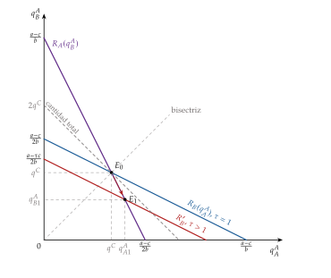
Fuente: elaboración propia a partir de Brander y Krugman (1983) y Feenstra (2016, cap. 7).
iii) Implicaciones
¿Por qué se comercia? Por la rivalidad estratégica: cada empresa ve en el mercado ajeno una demanda percibida más elástica, porque allí su cuota es menor, y le compensa venderle aunque pague el transporte.
¿Qué produce cada país? Cada uno, el mismo bien homogéneo para los 2 mercados: comercio intraindustrial de un bien idéntico, en las 2 direcciones, que se explica por la estructura de mercado y no por ninguna diferencia entre países.
¿A qué relación real de intercambio? Con países simétricos, 1: el precio es el mismo en los 2 mercados.
¿Quién gana? Los consumidores, por el efecto procompetitivo; las empresas pierden su beneficio de monopolio, y el bienestar total es ambiguo (abajo).
Dumping recíproco: cada empresa vende fuera más barato, neto del transporte, que en casa. En el mercado \(A\) el consumidor paga lo mismo, \(p^A\), a las 2 empresas, pero la extranjera solo ingresa \(p^A/\tau\) por cada unidad que produce, menos de lo que ingresa en su propio mercado, y las 2 lo hacen a la vez. Les compensa porque en el mercado ajeno su cuota es menor y su demanda percibida, más elástica: cada unidad que venden fuera no rebaja el precio de lo que venden en casa.
Bienestar ambiguo. El comercio rompe los 2 monopolios (efecto procompetitivo: más cantidad y menos precio), pero gasta recursos en transportar el mismo bien en las 2 direcciones. Con costes de transporte pequeños gana el primer efecto; cerca del nivel prohibitivo, el segundo, y el comercio puede empeorar el bienestar (anexo D). Con libre entrada, el efecto procompetitivo domina y el comercio mejora el bienestar.
c) Extensiones
Política comercial estratégica: con un arancel en lugar del coste de transporte, el gobierno desplaza la función de reacción de la empresa extranjera hacia el origen y traslada beneficios a la nacional; con una subvención a la exportación en un tercer mercado, desplaza hacia fuera la de la nacional. Es la política comercial estratégica [ver tema 3.B.8].
d) Valoración
Aportación: explica el comercio cruzado de bienes casi homogéneos y por qué el comercio reduce el poder de mercado aunque no haya diferenciación ni escala.
Límites: depende de la competencia en cantidades y de la segmentación de los mercados. Con competencia en precios el resultado cambia, que es lo que vemos a continuación.
II.2. Competencia en precios y diferenciación
Una vez visto el dumping recíproco con competencia en cantidades, pasamos a lo que cambia cuando las empresas compiten en precios, con producto homogéneo y con producto diferenciado. Así se rellenan las 3 casillas del oligopolio de la tabla 1.
Con producto homogéneo: Bertrand
Con competencia a la Bertrand [ver tema 3.A.19] y mercados segmentados, el dumping recíproco desaparece: en el mercado \(A\), la empresa nacional fija un precio igual al coste de la extranjera, \(\tau c\) (o el de monopolio, si es menor), y se queda con todo el mercado. No hay comercio: solo la amenaza de la importación limita el poder del monopolista nacional.
El dumping recíproco necesita, pues, competencia en cantidades o, lo que lleva al mismo resultado, que las empresas elijan antes su capacidad y después compitan en precios [ver tema 3.A.19].
Las 4 preguntas: no se comercia, porque basta la amenaza de importar; cada país produce para su propio mercado; sin comercio, no hay relación real de intercambio que determinar, y ganan los consumidores, porque esa amenaza limita el precio del monopolista nacional.
Para la política, la competencia en precios importa mucho: con Bertrand, la política estratégica óptima pasa de una subvención a un impuesto a la exportación [ver tema 3.B.8].
Con diferenciación horizontal: Eaton y Kierzkowski (1984)
Con producto diferenciado, cada empresa conserva una parte de la demanda del otro mercado aunque compitan en precios, y vuelve a haber comercio intraindustrial. En el oligopolio con diferenciación horizontal de Eaton y Kierzkowski (1984), pocas empresas eligen la variedad que producen y su precio: el comercio surge de la diferenciación aunque haya pocas empresas [ver tema 3.A.18].
Las 4 preguntas: se comercia por la diferenciación horizontal; cada país produce las pocas variedades de sus empresas; con países simétricos, la relación real de intercambio es 1, y ganan los consumidores, por la variedad y por la competencia, que reduce los márgenes.
Con diferenciación vertical: Shaked y Sutton (1984)
Idea: si las variedades difieren en calidad, que todos ordenan igual, y la calidad cuesta sobre todo en I+D, un coste fijo, las empresas eligen calidades muy distintas para suavizar la competencia en precios, y solo caben unas pocas aunque el mercado crezca: es un oligopolio natural [ver tema 3.A.18].
Comercio: a diferencia de Krugman, el número de calidades que caben no depende del tamaño del mercado, sino de la distribución de la renta. Al integrarse 2 países parecidos, el mercado integrado sostiene el mismo número reducido de empresas que cada uno por separado:
salen empresas, la competencia se intensifica y los precios bajan, pero el número de calidades disponibles no aumenta;
las que sobreviven venden en los 2 países: hay un oligopolio internacional con comercio intraindustrial de calidades.
Las 4 preguntas: se comercia por la diferenciación vertical con costes fijos de calidad; cada país produce las calidades de las empresas que sobreviven en el oligopolio internacional; la relación real de intercambio no la determina el modelo, porque depende de en qué país estén esas empresas, y ganan los consumidores, por los precios más bajos, mientras salen empresas.
Contraste con Falvey: Falvey (1981) explica también el comercio de calidades, pero con competencia perfecta y ventaja comparativa: el país abundante en capital exporta las calidades altas, intensivas en capital (I.1). En Shaked y Sutton las calidades las explican los costes fijos y la estructura de mercado.
En oligopolio, la rivalidad estratégica crea comercio por sí sola: con competencia en cantidades y mercados segmentados, 2 empresas se invaden el mercado y se comercia el mismo bien en las 2 direcciones (dumping recíproco), con un efecto procompetitivo que puede no compensar el despilfarro del transporte. Con competencia en precios y producto homogéneo ese comercio desaparece, y vuelve con la diferenciación, horizontal o vertical. Hasta aquí, sin embargo, la escala era interna a cada empresa: falta ver qué pasa cuando es de la industria y del lugar.
III. Otros desarrollos
En el cante (7′): las economías externas (1′15″), con el gráfico de los 2 países como recomendable y el dicho; las dinámicas (0′15″), de palabra. La nueva geografía económica (4′): qué es, con la primera y la segunda naturaleza (0′30″); los supuestos en una frase (0′30″); las 3 fuerzas con la tabla 5, de palabra (1′); el tomahawk por capas y la histéresis (1′30″); las 4 preguntas y la política regional (0′30″). La gravedad (1′30″): la analogía con la física y la ecuación (0′30″), su fundamento en la nueva teoría (0′30″) y el efecto frontera (0′30″). El sistema de 4 ecuaciones del equilibrio a corto plazo, la condición de «no agujero negro», la dinámica en 3 paneles y la evidencia son para las preguntas del tribunal (anexo C).
Conclusión anticipada: cuando la escala no es de la empresa sino de la industria y del lugar, la historia decide quién produce qué, y los costes de comerciar deciden si la industria se reparte o se concentra; la integración puede crear un centro y una periferia entre regiones que eran iguales. La regularidad empírica que resume todo esto es la ecuación de gravedad.
Nexo: hasta aquí, los rendimientos crecientes eran internos a cada empresa. Pasamos ahora a los externos, a los dinámicos y a lo que ocurre cuando, además, los factores se pueden mover.
III.1. Economías de escala externas y dinámicas. Nueva geografía económica
III.1.1. Economías de escala externas y dinámicas
a) Idea
Hay economías de escala externas cuando el coste medio de cada empresa baja con la producción de toda la industria en un lugar, no con la suya. Como ninguna empresa gana por ser grande, son compatibles con la competencia perfecta: muchas empresas pequeñas en un mismo distrito industrial [ver tema 3.A.16].
Marshall señaló 3 fuentes:
proveedores especializados de bienes intermedios y servicios, que solo existen si hay muchos clientes cerca;
un mercado de trabajo especializado, que reduce el coste de encontrar al trabajador o el puesto adecuados;
y los desbordamientos de conocimiento: las ideas «están en el aire» del distrito.
Explican la especialización y el comercio entre países parecidos aunque no haya competencia imperfecta [ver tema 3.A.12].
b) Modelo
i) Supuestos
2 países, 1 y 2, pueden producir un bien con economías externas (los botones de Krugman, Obstfeld y Melitz (2018, cap. 7)), con muchas empresas en competencia perfecta: el precio es igual al coste medio de la industria, que baja con su producción.
El país 2 tiene costes menores, por ejemplo salarios más bajos: su curva de coste medio está por debajo de la del 1. Pero la industria empezó antes en el país 1.
ii) Desarrollo
Al abrirse, la industria se concentra en un país, que abastece la demanda mundial con un coste medio menor que el de autarquía: el precio baja en los 2 países, en lugar de converger como en la teoría tradicional (gráfico 15).
Pero el que se queda la industria no tiene por qué ser el de menores costes: el país 1, que empezó antes, produce mucho y barato, y ninguna empresa del país 2 entraría sola, porque con su industria aún sin tamaño su coste, \(c_0\), está por encima del precio del país 1. La ventaja de costes del país 2 no llega a materializarse.
La industria se queda donde empezó antes, no donde sería más barata: es el «a quien madruga, Dios le ayuda» de la geografía industrial.
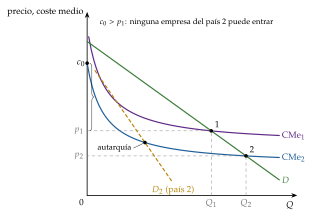
Fuente: elaboración propia a partir de Krugman, Obstfeld y Melitz (2018, cap. 7).
iii) Implicaciones
¿Por qué se comercia? Por las economías externas: concentrada en un país, la industria abastece al mundo con un coste medio menor.
¿Qué produce cada país? El que empezó antes, el bien con economías externas, y el otro lo importa: el patrón de comercio depende de la historia y de los accidentes (dónde empezó la industria), y tiende a perpetuarse.
¿A qué relación real de intercambio? Al concentrarse la producción, el precio del bien queda por debajo del de autarquía del país 1, y la relación real de intercambio del país 2, que lo importa, mejora frente a su autarquía, salvo que, con una industria propia del mismo tamaño, pudiera producirlo aún más barato.
¿Quién gana? En general los 2, por el menor precio; pero el comercio puede empeorar a un país, como se ve a continuación.
El comercio puede empeorar a un país: el país 2, cerrado, podría producir para sí más barato de lo que importa.20
De ahí el argumento de la industria naciente: proteger temporalmente la industria hasta que alcance el tamaño que le da la ventaja [ver tema 3.B.8]. Exige saber qué industria proteger y durante cuánto tiempo, y se presta a la captura.
c) Extensiones
Economías externas nacionales e internacionales: si la escala que importa es la de la industria mundial, por ejemplo porque abarata la variedad de componentes que todos pueden comprar, el comercio permite aprovecharla sin concentrar la industria en un país y genera comercio intraindustrial de componentes; si es la nacional, empuja a la especialización completa. Con rendimientos crecientes, la frontera de posibilidades de producción puede ser convexa [ver tema 3.A.11].
Economías de escala dinámicas: el coste unitario baja con la producción acumulada, por el aprendizaje: es la curva de aprendizaje [ver tema 3.A.12]. Son sobre todo internas, pero lo aprendido se difunde a otras empresas. Como las externas, hacen que la ventaja comparativa se cree con la experiencia y dependa de la historia: un choque temporal, como una sobrevaluación del tipo de cambio, puede cambiar para siempre la especialización de un país. Son el otro pilar del argumento de la industria naciente [ver tema 3.B.8] y enlazan con el comercio y el crecimiento [ver tema 3.B.9].
d) Valoración
Aportación: explica que países parecidos se especialicen en industrias distintas y que la especialización persista por la historia, con competencia perfecta.
Límites: el patrón queda indeterminado (depende de quién empezó) y el resultado de bienestar, ambiguo. Y la localización se toma como dada: falta explicar por qué la industria se concentra en un lugar, que es lo que hace la nueva geografía económica.
III.1.2. La nueva geografía económica: el modelo centro-periferia (Krugman, 1991)
¿Qué es la nueva geografía económica? La riqueza, la población y la industria se concentran en unos pocos lugares: el cinturón manufacturero del noreste de Estados Unidos a finales del siglo XIX, la cuenca del Ruhr o, hoy, Silicon Valley. Las causas pueden ser:
de primera naturaleza: diferencias exógenas entre lugares, como los recursos, el clima, los ríos o los puertos;21
o de segunda naturaleza: el resultado de las decisiones de empresas y trabajadores, que se refuerzan entre sí.
La nueva geografía económica estudia las segundas: por qué diferencias iniciales pequeñas acaban en una distribución muy desigual de la actividad. Su herramienta es la de la nueva teoría del comercio, la competencia monopolística de Dixit-Stiglitz con rendimientos crecientes y costes iceberg, con factores que se pueden mover entre lugares.22 Es el germen del efecto del mercado doméstico (I.3) llevado a sus últimas consecuencias: el tamaño de cada mercado deja de ser dado.
a) Idea
Igual que Krugman (1979) mostró que puede haber comercio sin ventaja comparativa, Krugman (1991b) muestra que puede haber aglomeración sin ninguna diferencia exógena entre regiones. ¿Por qué y cuándo se concentra la industria en una región y deja a la otra como periferia agrícola?
b) Modelo
i) Supuestos
2 regiones, \(A\) y \(B\), idénticas en todo, y 2 sectores:
la agricultura, un bien homogéneo \(X\) con rendimientos constantes (un trabajador por unidad), competencia perfecta y sin costes de transporte; es el numerario, \(p_X=1\). Sus trabajadores son inmóviles entre regiones y se reparten a partes iguales, \((1-\mu)/2\) en cada una [ver tema 3.A.16];
las manufacturas, \(Y\): variedades diferenciadas en competencia monopolística, con coste \(w_i\,(F+c\,q)\) en la región \(i\) y costes iceberg \(\tau>1\) entre regiones. Sus trabajadores, \(\mu\) en total, son móviles: \(\lambda_i\) es la parte que vive en la región \(i\), con \(\lambda_A+\lambda_B=1\).
Preferencias: los consumidores gastan la parte \(1-\mu\) de su renta en el bien agrícola y la parte \(\mu\) en las manufacturas, con el agregador de Dixit-Stiglitz [ver tema 3.A.18] de las variedades \(x_k\): \[U=X^{1-\mu}\,V^{\mu},\qquad V\equiv\Big[\sum_{k=1}^{n}x_k^{\rho}\Big]^{1/\rho},\qquad \rho=\frac{\sigma-1}{\sigma}.\] La población total se normaliza a 1, de modo que la parte de trabajadores de la industria es la misma que la parte del gasto en manufacturas, \(\mu\).23
ii) Desarrollo
El equilibrio a corto plazo: dada la distribución de los trabajadores industriales, \(\lambda_A\), se determinan los salarios y los precios (el sistema completo, en el anexo C).
Agricultura: el comercio sin costes iguala el precio de \(X\) en las 2 regiones y, como un trabajador hace una unidad, el salario agrícola es 1 en las 2.
Manufacturas: como en Krugman (I.2), el precio de una variedad de la región \(i\) es \(p_{ii}=\frac{\sigma}{\sigma-1}\,c\,w_i\) en su región y \(p_{ij}=\tau\,p_{ii}\) en la otra; la libre entrada fija la escala, \(q^*=(\sigma-1)F/c\), y el mercado de trabajo, el número de variedades de cada región, \[n_i=\frac{\lambda_i\,\mu}{\sigma F}:\] la industria de cada región es proporcional a sus trabajadores industriales.
El salario real de los trabajadores industriales de la región \(i\) es su salario deflactado por el índice de precios del consumo, \(\omega_i=w_i/(P_X^{1-\mu}P_i^{\mu})=w_i\,P_i^{-\mu}\), donde \(P_i\) es el índice de precios de las manufacturas en \(i\). Crece con el acceso a los mercados, que sube el salario que puede pagar la industria, y con las variedades que se producen cerca, que abaratan \(P_i\).
La dinámica: los trabajadores industriales se mueven hacia la región con mayor salario real:
\[\dot{\lambda}_A=\omega_A(\lambda_A)-\omega_B(\lambda_A)\tag{6}\]
Hay equilibrio a largo plazo cuando los salarios reales se igualan (el equilibrio disperso o simétrico, \(\lambda_A=1/2\)) o cuando toda la industria está en una región (el de centro-periferia, \(\lambda_A=1\) o \(\lambda_A=0\)) y en ella el salario real es al menos el de la otra.
Las 3 fuerzas (tabla 5). Partiendo del reparto simétrico, se lleva a unos pocos trabajadores de \(B\) a \(A\) y se mira si el salario real de \(A\) sube (y siguen llegando) o baja (y vuelven):
el vínculo de demanda (demand linkage): más trabajadores en \(A\) gastan más allí; como vender en casa ahorra transporte, sube la demanda de las variedades de \(A\) y el salario que puede pagar su industria (el efecto del mercado doméstico). Aglomera;
el vínculo del coste de la vida (cost of living linkage): más variedades producidas en \(A\) abaratan allí las manufacturas (baja \(P_A\)) y sube el salario real. Aglomera;
la competencia en el mercado local (market crowding): más empresas en \(A\) se reparten la demanda local, cada una vende menos y puede pagar menos; y la demanda de los agricultores, inmóvil, sigue repartida entre las 2 regiones. Dispersa.
Los 2 primeros forman una causación circular: las empresas van donde está el mercado, y el mercado está donde están las empresas. Cada trabajador que llega agranda el mercado y abarata la vida, y atrae a más, hasta que la competencia y la demanda agrícola inmóvil lo frenan.
| Fuerza | Cadena | Efecto |
|---|---|---|
| Vínculo de demanda | \(\uparrow\lambda_A\Rightarrow\uparrow Y_A\Rightarrow\uparrow\) demanda de las variedades de \(A\) \(\Rightarrow\uparrow w_A\Rightarrow\uparrow\omega_A\) | aglomeración |
| Coste de la vida | \(\uparrow\lambda_A\Rightarrow\uparrow n_A\Rightarrow\downarrow P_A\Rightarrow\uparrow\omega_A\) | aglomeración |
| Competencia local | \(\uparrow\lambda_A\Rightarrow\uparrow n_A\Rightarrow\downarrow\) ventas de cada empresa de \(A\) \(\Rightarrow\downarrow w_A\Rightarrow\downarrow\omega_A\) | dispersión |
Fuente: elaboración propia a partir de Baldwin et al. (2003, cap. 2) y Gandolfo (2014, cap. 16).
iii) Implicaciones
Qué fuerza gana depende de los costes de transporte, de la preferencia por la variedad (\(\sigma\)) y del peso de las manufacturas (\(\mu\)). Nos fijamos en los costes de comerciar, porque bajarlos es lo que hace la integración. Se miden con la libertad comercial (freeness of trade), \(\phi_\tau\equiv\tau^{1-\sigma}\in(0,1]\): cerca de 0 si comerciar es casi imposible, 1 sin costes. Hay 3 casos (anexo C):
costes altos: la competencia local y la demanda agrícola inmóvil pesan más que los vínculos, porque las empresas venden sobre todo en su región, y el único equilibrio estable es el disperso;
costes intermedios: son estables a la vez el disperso y los 2 de centro-periferia; hay equilibrios múltiples y la historia decide;
costes bajos: los vínculos ganan y el equilibrio estable es el de centro-periferia, con toda la industria en una región.
El diagrama del tomahawk (gráfico 16) resume los equilibrios a largo plazo según \(\phi_\tau\), con trazo continuo los estables y discontinuo los inestables:
el disperso es estable hasta el punto de ruptura, \(\phi_\tau^{\mathrm r}\) (break point), a partir del cual cualquier perturbación concentra la industria;
el centro-periferia es sostenible a partir del punto de sostenibilidad, \(\phi_\tau^{\mathrm s}\) (sustain point), con \(\phi_\tau^{\mathrm s}<\phi_\tau^{\mathrm r}\);
entre los 2 conviven ambos: hay histéresis. Si los costes bajan y la industria se concentra, al volver a subir no se dispersa hasta que la libertad comercial cae por debajo de \(\phi_\tau^{\mathrm s}\).
La condición de «no agujero negro»: todo lo anterior exige que \(\mu<\rho=(\sigma-1)/\sigma\). Si no se cumple, las fuerzas de aglomeración son tan fuertes que la industria se concentra con cualquier coste de transporte.
Las 4 preguntas:
¿por qué se comercia? Por los rendimientos crecientes y la variedad, y, con factores móviles, por la aglomeración que crean;
¿qué produce cada región? Con costes bajos, el centro produce todas las manufacturas y la periferia, el bien agrícola: un comercio interindustrial entre regiones que eran iguales;
¿a qué relación real de intercambio? No la deciden las dotaciones, sino la aglomeración: el centro tiene salarios reales más altos;
¿quién gana? Los trabajadores industriales, que se concentran en el centro, y los agricultores del centro, que pagan menos por las manufacturas; pierden los de la periferia, que las importan todas con costes de transporte.
La integración reduce los costes de comerciar y, en este modelo, puede concentrar la industria y crear un centro y una periferia entre regiones o países que eran iguales [ver tema 3.B.10]: es la base de los argumentos para la política regional [ver tema 3.B.40].

Fuente: elaboración propia a partir de Baldwin et al. (2003, cap. 2) y Fujita, Krugman y Venables (1999, cap. 5).
c) Extensiones
Vínculos verticales: si las empresas usan como insumos las variedades de las demás, se aglomeran aunque los trabajadores no se muevan: proveedores y clientes se atraen. Es la versión que mejor se aplica a la integración entre países, donde la migración es pequeña.
Geografía y crecimiento: con crecimiento endógeno por innovación [ver tema 3.A.44], abaratar el comercio de bienes favorece la aglomeración, mientras que abaratar la difusión del conocimiento entre regiones favorece la dispersión [ver tema 3.B.9].
d) Evidencia empírica
El acceso al mercado importa: tras la división de Alemania, las ciudades de Alemania Occidental cercanas a la nueva frontera, que perdieron su mercado del este, crecieron mucho menos que las demás, con una magnitud que cuadra con un modelo de nueva geografía económica.
Pero los fundamentos también: la mayoría de las ciudades japonesas bombardeadas en la Segunda Guerra Mundial recuperaron su tamaño relativo, lo que sugiere que la primera naturaleza decide el patrón general de la localización y que los equilibrios múltiples son menos frecuentes de lo que el modelo permite.
e) Valoración
Aportación: con muy pocos supuestos, todas las fuerzas son endógenas (demanda, precios, competencia), y explica la aglomeración, los equilibrios múltiples y la histéresis.
Límites:
es muy estilizado (2 regiones, costes iceberg, un factor móvil) y casi todo se resuelve numéricamente;
los resultados dependen de los parámetros y de las formas funcionales, lo que dificulta sacar conclusiones de bienestar y de política;
y la migración de trabajadores entre países es mucho menor que entre regiones.
El propio Krugman (1998) reconoce que la nueva geografía, como la nueva teoría del crecimiento, ha tenido más éxito planteando preguntas que respondiéndolas.
III.2. Modelos de gravedad
Una vez vistos los modelos que explican por qué y qué se comercia, terminamos con la regularidad empírica que resume cuánto comercian 2 países y que la nueva teoría ha fundamentado.
a) Idea
b) Modelo
i) La analogía
En física, la fuerza de atracción entre 2 cuerpos crece con sus masas y cae con el cuadrado de la distancia que los separa, según la ley de Isaac Newton: \[F_g=G\,\frac{M_1\,M_2}{d^{2}}.\]
En economía, el comercio entre 2 países crece con su tamaño económico (el PIB, la «masa») y cae con la distancia entre ellos, que aproxima los costes de comerciar.
ii) La ecuación
El comercio bilateral entre los países \(i\) y \(j\) es
\[X_{ij}=e^{\beta_0}\,\frac{Y_i^{\beta_1}\,Y_j^{\beta_2}}{d_{ij}^{\beta_3}}\quad\Longrightarrow\quad\ln X_{ij}=\beta_0+\beta_1\ln Y_i+\beta_2\ln Y_j-\beta_3\ln d_{ij}+u_{ij}\tag{7}\]
que se estima en logaritmos, con elasticidades cercanas a 1 en valor absoluto, \(\beta_1\approx\beta_2\approx 1\) y \(\beta_3\approx 1\).
De forma más general, en la literatura actual el comercio entre 2 países es:
creciente en la «masa» de bienes que puede ofrecer el exportador;
creciente en la «masa» de demanda del importador;
y decreciente en los costes de comerciar: la distancia, pero también las fronteras, los aranceles, la lengua, la historia común o la pertenencia a un mismo acuerdo comercial, que se añaden como variables a la ecuación.
iii) El fundamento teórico
Nació sin teoría, como una regularidad empírica. El primer fundamento es de Anderson (1979), con bienes diferenciados por país de origen; la nueva teoría lo da de forma natural: con preferencia por la variedad, cada país compra a todos en proporción a su tamaño (la expresión de las importaciones de Krugman, I.2, es ya una gravedad sin distancia), y con costes iceberg, menos cuanto más lejos están (I.3).
Con costes de comerciar bilaterales \(\tau_{ij}\) se llega a la gravedad estructural de Anderson y Wincoop (2003): \[X_{ij}=\frac{Y_i\,Y_j}{Y^W}\left(\frac{\tau_{ij}}{\Pi_i\,P_j}\right)^{1-\sigma},\] donde \(Y^W\) es la renta mundial y \(\Pi_i\) y \(P_j\) son las resistencias multilaterales, unos índices de los costes que tiene cada país con todos los demás: el comercio entre 2 países no depende de sus costes bilaterales en sí, sino de esos costes frente a los que tienen con el resto del mundo.
Con empresas heterogéneas, la distancia actúa sobre todo por el margen extensivo, el número de empresas que exportan (I.4).
iv) Implicaciones
¿Por qué se comercia? En la versión microfundada, por la variedad: cada país compra de todos, en proporción a su tamaño y menos cuanto más caro es comerciar.
¿Qué produce cada país? La ecuación no lo dice: explica volúmenes, no qué bienes; con el fundamento de la nueva teoría, cada país produce sus variedades.
¿A qué relación real de intercambio? Tampoco la determina por sí sola: en la versión estructural, las resistencias multilaterales son índices de precios, y los precios relativos dependen de los costes de comerciar de cada país con todos.
¿Quién gana? Más los países grandes y cercanos a mercados grandes, que comercian más; y los acuerdos entre vecinos crean más comercio que los acuerdos entre países lejanos [ver tema 3.B.10].
c) Evidencia empírica
Es una de las relaciones mejor contrastadas de la economía, y se usa para medir el efecto de las fronteras y de los acuerdos comerciales. El estudio de referencia es el de McCallum (1995), con el comercio entre Canadá y Estados Unidos en 1988, justo antes del acuerdo de libre comercio entre los 2 países: el comercio entre 2 provincias canadienses era unas 20 veces mayor que el de una provincia con un estado de Estados Unidos del mismo tamaño y a la misma distancia. Es el efecto frontera, que tiene varias explicaciones:
administrativas: aduanas, normas técnicas y regulaciones distintas;
geográficas: la distancia y las redes de transporte, que son nacionales;
culturales: la lengua, las instituciones o las redes de empresas e inmigrantes;
y el sesgo nacional (home bias): los consumidores prefieren seguir comprando los productos de su país aunque puedan acceder a otros más baratos o de mayor calidad.
Al tener en cuenta las resistencias multilaterales, el efecto frontera se reduce mucho, aunque no desaparece. La integración económica, como la de la Unión Europea, puede reducirlo [ver tema 3.B.10].25
d) Valoración
Aportación: varias décadas de estudios confirman la relación, y es la herramienta habitual para evaluar acuerdos comerciales, fronteras y costes de comerciar.
Límites: durante mucho tiempo careció de fundamento teórico; hoy tiene demasiados, porque la dan la competencia monopolística de Krugman, el modelo ricardiano de Eaton y Kortum (2002) y el de empresas heterogéneas, de modo que su buen ajuste no permite distinguir entre ellos. La estimación y la evaluación de los acuerdos están en la teoría de la integración [ver tema 3.B.10].
Con economías externas, la industria se queda donde empezó antes, aunque no sea donde sería más barata; con economías dinámicas, la ventaja comparativa se crea con la experiencia. Con factores móviles, los vínculos de demanda y del coste de la vida concentran la industria cuando comerciar es barato, con equilibrios múltiples e histéresis (el tomahawk): la integración puede crear un centro y una periferia entre regiones iguales. Y la ecuación de gravedad, la regularidad más robusta del comercio, tiene en la nueva teoría su fundamento.
Conclusión
Recapitulación:
En conclusión, la nueva teoría explica lo que la tradicional no veía.
Con competencia monopolística, las economías de escala y la preferencia por la variedad bastan para que comercien países idénticos; la apertura da más variedades y, si la elasticidad no es constante, precios más bajos; con empresas heterogéneas, solo exportan las más productivas y la apertura las hace crecer a costa de las peores.
Con oligopolio, el comportamiento estratégico lleva a comerciar incluso el mismo bien.
Y con economías externas y movilidad de factores, la historia y la geografía deciden dónde se produce.
Las respuestas a las 3 preguntas del principio son, por tanto, la estructura de mercado, 4 ganancias nuevas (variedad, escala, competencia y reasignación) y los costes de comerciar. La teoría tradicional no queda superada, sino completada (tabla 6).
Relevancia:
Aparecen ganancias nuevas del comercio, pero también costes de ajuste concentrados en las empresas que cierran.
Lo muestra la liberalización entre Canadá y Estados Unidos de 1989: el empleo cayó un 12 % en las industrias más expuestas a corto plazo, y la productividad subió entre un 14 % y un 15 % a largo.
Extensiones:
La competencia imperfecta abre la puerta a la política comercial estratégica [ver tema 3.B.8]; la integración puede concentrar la actividad [ver tema 3.B.10]; la variedad y el aprendizaje enlazan con el comercio y el crecimiento [ver tema 3.B.9]; y la fragmentación de la producción, con las cadenas globales de valor y la elección entre exportar e invertir [ver tema 3.B.18].
Opinión:
Arkolakis, Costinot y Rodríguez-Clare (2012) muestran que, en una familia amplia de modelos (Krugman, Melitz y también el ricardiano de Eaton y Kortum), la ganancia agregada del comercio se calcula con 2 datos, la parte del gasto en bienes nacionales y la elasticidad del comercio a sus costes.
Los modelos nuevos cambian sobre todo cómo se gana y quién gana o pierde, más que cuánto; por eso sus implicaciones más sólidas no son un argumento general contra el librecambio, sino la apertura acompañada de políticas que ayuden a las empresas a cruzar el umbral de la exportación y a los trabajadores a pasar de las empresas que cierran a las que crecen.
Idea final:
El refrán aconseja no vender miel al colmenero, pero el comercio moderno lo hace todos los días.
Tiene sentido cuando la miel de cada uno es distinta, cuando producirla en grande sale más barato y cuando quien la vende es el mejor colmenero: con rendimientos crecientes, la diferencia entre países no es solo la causa del comercio, sino también su resultado.
| Teoría tradicional | Nueva teoría | |
|---|---|---|
| ¿Por qué se comercia? | Porque los países son distintos (tecnología, dotaciones) | También porque especializarse permite aprovechar la escala, aunque los países sean iguales |
| ¿Qué determina la especialización? | La ventaja comparativa | Además, la historia y el azar: dónde empezó cada industria |
| ¿Qué bienes tiene en mente? | Bienes homogéneos, como el trigo | Bienes diferenciados y con grandes economías de escala, como los aviones |
| ¿Qué efectos tiene la protección? | Encarece los bienes y reduce el bienestar (salvo el arancel óptimo de un país grande) | Puede ayudar al país que protege una industria con escala, pero si todos protegen se fragmenta el mercado |
Fuente: elaboración propia.
A. Anexo: derivaciones del modelo de Krugman
La demanda de cada variedad
Cada consumidor, con renta \(w\) que gasta entera en las variedades, resuelve \[\begin{array}{rl}\displaystyle \max_{\{x_i\}} & \displaystyle \Big[\sum_{i=1}^{n}x_i^{\rho}\Big]^{1/\rho} \\ \text{s.a.} & \sum_{i=1}^{n}p_i\,x_i=w\end{array}\]
La relación marginal de sustitución entre 2 variedades es igual a su precio relativo: \((x_i/x_j)^{\rho-1}=p_i/p_j\), es decir, \(x_i=x_j\,(p_i/p_j)^{-\sigma}\), porque \(1/(1-\rho)=\sigma\).
Sustituyendo en la restricción, \(\sum_ip_ix_i=x_j\,p_j^{\sigma}\sum_ip_i^{1-\sigma}=w\), de donde \[x_j=\frac{w\,p_j^{-\sigma}}{\sum_ip_i^{1-\sigma}}=\frac{w}{P}\left(\frac{p_j}{P}\right)^{-\sigma},\qquad P\equiv\Big[\sum_{i=1}^{n}p_i^{\,1-\sigma}\Big]^{\frac{1}{1-\sigma}},\] que es (1). \(P\) es el coste mínimo de una unidad del agregador: el gasto total es \(P\,U=w\). Con un sector numerario además del diferenciado, la derivación es la del anexo de Dixit-Stiglitz [ver tema 3.A.18].∎
El precio, la escala y el número de variedades
El precio. Con \(P\) dado, la demanda de mercado de la variedad es \(L\,x_i=A\,p_i^{-\sigma}\), con \(A\) constante, y el beneficio, \(B_i=(p_i-cw)\,A\,p_i^{-\sigma}-wF\). La condición de primer orden es \(A\,p_i^{-\sigma}-\sigma\,(p_i-cw)\,A\,p_i^{-\sigma-1}=0\), es decir, \(p_i-\sigma\,(p_i-cw)=0\), de donde \(p^*=\frac{\sigma}{\sigma-1}\,c\,w\), que es (2).
La escala. Con beneficio nulo, \((p^*-cw)\,q^*=wF\); como \(p^*-cw=\frac{c\,w}{\sigma-1}\), \(q^*=(\sigma-1)F/c\).
El número de variedades. Cada empresa emplea \(F+c\,q^*=F+(\sigma-1)F=\sigma F\) trabajadores, y el pleno empleo, \(n\,\sigma F=L\), da \(n^*=L/(\sigma F)\).
El bienestar. Con todos los precios iguales, \(P=\big[n\,p^{*\,1-\sigma}\big]^{\frac{1}{1-\sigma}}=p^*\,n^{\frac{1}{1-\sigma}}\), y el salario real es \(w/P=\frac{\sigma-1}{\sigma c}\,n^{\frac{1}{\sigma-1}}\), creciente en \(n\).∎
La balanza comercial con 2 países
Sin costes de transporte, cada consumidor gasta lo mismo en cada variedad, venga de donde venga. Los consumidores de \(A\) gastan \(wL_A\) y la parte que va a las variedades de \(B\) es \(n_B/(n_A+n_B)=L_B/(L_A+L_B)\): \[M_A=\frac{w\,L_A\,L_B}{L_A+L_B}.\] Por simetría, \(M_B\) es lo mismo: el comercio está equilibrado, sin que haga falta ajustar los salarios, que son iguales en los 2 países. Las exportaciones de cada país son la parte de las variedades nacionales que compran los extranjeros, y todo ese comercio es intraindustrial (\(GL=1\)).
La tangencia de Chamberlin con demanda isoelástica
El gráfico 17 muestra el equilibrio de una empresa en 3 pasos:
con pocas variedades, el precio que da el margen está por encima del coste medio y hay beneficios (panel a);
atraídas por ellos, entran variedades: la demanda de cada una se desplaza hacia la izquierda, con el precio fijo en el margen sobre \(c\,w\) (panel b);
hasta que la demanda es tangente al coste medio y el beneficio es nulo (panel c).26
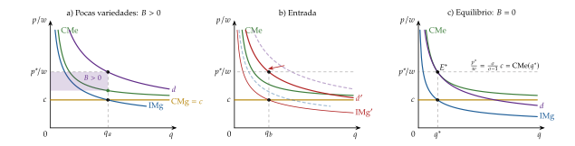
B. Anexo: el equilibrio del modelo de Melitz
Ingresos relativos. Con la demanda CES, el ingreso de una empresa es proporcional a \(\varphi^{\sigma-1}\), de modo que el de 2 empresas cualesquiera está en la proporción \(r(\varphi)/r(\varphi')=(\varphi/\varphi')^{\sigma-1}\). Toda la información de la distribución de productividades que hace falta está en la productividad media de las que producen: \[\tilde\varphi(\varphi^*)\equiv\left[\frac{1}{1-G(\varphi^*)}\int_{\varphi^*}^{\infty}\varphi^{\sigma-1}\,dG(\varphi)\right]^{\frac{1}{\sigma-1}}.\] La industria se comporta como si todas sus empresas tuvieran la productividad \(\tilde\varphi\), y el beneficio medio es el de esa empresa, \(\bar B=B^d(\tilde\varphi)\).
Condición de beneficio nulo de la empresa marginal. Como \(B^d(\varphi^*)=0\), el ingreso de la empresa marginal es \(r(\varphi^*)=\sigma\,w\,F^d\), y el beneficio medio se escribe solo en función del umbral: \[\bar B=w\,F^d\left[\left(\frac{\tilde\varphi(\varphi^*)}{\varphi^*}\right)^{\sigma-1}-1\right].\] En el plano \((\varphi^*,\bar B)\) es una relación que Melitz (2003) supone decreciente (con la distribución de Pareto, horizontal): cuanto más exigente es el umbral, más se parecen las supervivientes a la marginal.
Condición de libre entrada. Quien paga el coste hundido sobrevive con probabilidad \(1-G(\varphi^*)\) y gana entonces, en promedio, \(\bar B\); la entrada sigue mientras eso supere el coste: \[\big[1-G(\varphi^*)\big]\,\bar B=w\,F^e.\] Es una relación creciente en el mismo plano: si el umbral es más alto, sobrevivir es menos probable y hace falta un beneficio medio mayor para que compense entrar.27
El equilibrio es el corte de las 2 relaciones, que fija \(\varphi^*\) y \(\bar B\); el índice de precios y el número de empresas salen después del mercado de trabajo.∎
Con comercio, el beneficio medio suma el de exportar de las que exportan, que son la parte \(\big[1-G(\varphi^*_x)\big]/\big[1-G(\varphi^*)\big]\) de las supervivientes, y la condición de beneficio nulo se desplaza hacia arriba. Con la condición de libre entrada igual, el nuevo corte tiene un umbral de supervivencia mayor, \(\varphi^*>\varphi^*_{\mathrm{aut}}\): es la selección del apartado I.4, y sube la productividad media, \(\tilde\varphi\).
Por qué la recta del beneficio interior gira hacia abajo: al abrirse, la demanda que encuentra cada empresa en su mercado interior pasa de su nivel de autarquía a otro, igual en los 2 países, que no puede ser mayor. Si lo fuera, la curva del beneficio total con comercio estaría por encima de la de autarquía para todas las productividades, todas las empresas ganarían más y se violaría la condición de libre entrada. Por eso la demanda interior de cada empresa baja, y con ella la pendiente de \(B^d\).∎
C. Anexo: el modelo centro-periferia con más detalle
El equilibrio a corto plazo
Eligiendo las unidades de modo que el precio en origen de cada variedad sea igual al salario de su región y que el número de variedades sea \(n_i=\lambda_i\) (son normalizaciones), el equilibrio de cada región \(i\), con \(j\) la otra, son 4 ecuaciones: \[\tag{8} Y_i=\mu\,\lambda_i\,w_i+\frac{1-\mu}{2}\qquad\text{(renta)}\] \[\tag{9} P_i=\Big[\lambda_i\,w_i^{1-\sigma}+\phi_\tau\,\lambda_j\,w_j^{1-\sigma}\Big]^{\frac{1}{1-\sigma}}\qquad\text{(índice de precios de las manufacturas)}\] \[\tag{10} w_i=\Big[Y_i\,P_i^{\sigma-1}+\phi_\tau\,Y_j\,P_j^{\sigma-1}\Big]^{\frac{1}{\sigma}}\qquad\text{(salario industrial)}\] \[\tag{11} \omega_i=w_i\,P_i^{-\mu}\qquad\text{(salario real)}\] con \(\phi_\tau=\tau^{1-\sigma}\).
Su lectura:
(8): la renta de la región es la de sus trabajadores industriales más la de sus agricultores, con salario 1;
(9): las manufacturas son más baratas en la región que produce más variedades, porque las importadas pagan el transporte;
(10): el salario que puede pagar la industria crece con el acceso a los mercados, la renta propia y la ajena, esta rebajada por el transporte, ponderadas por lo poco que compiten allí las demás variedades;
(11): el salario real deflacta por el índice de precios del consumo, con el bien agrícola de precio 1.
La dinámica en los 3 casos
Con (6), \(\lambda_A\) sube si \(\omega_A>\omega_B\) y baja si \(\omega_A<\omega_B\). El gráfico 18 representa \(\omega_A-\omega_B\) frente a \(\lambda_A\):
costes altos (\(\phi_\tau<\phi_\tau^{\mathrm s}\), panel de la izquierda): la curva es decreciente y corta el eje solo en \(1/2\), que es estable: cualquier perturbación se corrige;
costes intermedios (\(\phi_\tau^{\mathrm s}<\phi_\tau<\phi_\tau^{\mathrm r}\), panel central): corta el eje en \(1/2\) con pendiente negativa (estable) y en 2 puntos interiores con pendiente positiva (inestables); cerca de 0 y de 1 la diferencia empuja hacia los extremos, que también son estables;
costes bajos (\(\phi_\tau>\phi_\tau^{\mathrm r}\), panel de la derecha): la curva es creciente en \(1/2\), que se vuelve inestable, y los únicos equilibrios estables son la aglomeración en \(A\) o en \(B\).
El tomahawk (gráfico 16) junta los 3 paneles: para cada \(\phi_\tau\) marca los ceros de la curva y si son estables.

Fuente: elaboración propia a partir de Fujita, Krugman y Venables (1999, cap. 5) y Gandolfo (2014, cap. 16).
La condición de «no agujero negro»
Con costes muy altos (\(\phi_\tau\to0\)), cada región vive de su propia demanda y lo que decide es si los vínculos (la parte \(\mu\) del gasto que va a las manufacturas) pesan más que la competencia en el mercado local, que es mayor cuanto más sustituibles son las variedades. El equilibrio disperso es estable con costes altos solo si \[\mu<\rho=\frac{\sigma-1}{\sigma}.\] Si no se cumple, las fuerzas de aglomeración ganan con cualquier coste de transporte y toda la industria cae en una región, como en un «agujero negro». Con la condición, el punto de sostenibilidad \(\phi_\tau^{\mathrm s}\) está por debajo del de ruptura \(\phi_\tau^{\mathrm r}\), y entre los 2 hay histéresis.
El punto de ruptura tiene una expresión cerrada en función de \(\sigma\) y \(\mu\); el de sostenibilidad se obtiene numéricamente.
D. Anexo: el dumping recíproco, un ejemplo numérico
El bienestar de cada país es el excedente del consumidor en su mercado más los beneficios de su empresa en los 2 mercados. De las condiciones de primer orden, \(p^A-c=b\,q_A^A\) y \(p^A-\tau c=b\,q_B^A\), de modo que el beneficio de cada empresa en cada mercado es \(b\) por el cuadrado de lo que vende; por simetría, lo que la empresa \(A\) gana en \(B\) es lo que la \(B\) gana en \(A\). Con \(Q^A=q_A^A+q_B^A\): \[W(\tau)=\frac{b\,(Q^A)^2}{2}+b\,\Big[(q_A^A)^2+(q_B^A)^2\Big].\]
Sin comercio, cada país es un monopolio: \(q^M=(a-c)/(2b)\), \(p^M=(a+c)/2\) y \(W^{\mathrm{aut}}=3(a-c)^2/(8b)\).
Ejemplo: con \(a=10\), \(b=1\) y \(c=2\), \(W^{\mathrm{aut}}=24\) y, sustituyendo el equilibrio de Cournot, \(W(\tau)=38-12\tau+\frac{22}{9}\tau^2\) (tabla 7).
| \(\tau\) | \(q_A^A\) | \(q_B^A\) | \(Q^A\) | \(p^A\) | \(W\) |
|---|---|---|---|---|---|
| 1 | 2,67 | 2,67 | 5,33 | 4,67 | 28,4 |
| 1,5 | 3,00 | 2,00 | 5,00 | 5,00 | 25,5 |
| 2 | 3,33 | 1,33 | 4,67 | 5,33 | 23,8 |
| 3 | 4,00 | 0 | 4,00 | 6,00 | 24,0 |
Fuente: elaboración propia a partir de Feenstra (2016, cap. 7).
El comercio mejora el bienestar respecto a la autarquía si \(W(\tau)>24\), es decir, si \(11\tau^2-54\tau+63>0\), lo que, mientras hay comercio (\(\tau<3\)), ocurre si \(\tau<21/11\approx1{,}91\). Entre 1,91 y 3 lo empeora: el transporte cruzado del mismo bien gasta más de lo que gana la competencia. Con \(\tau\geq3=(a+c)/(2c)\), la empresa extranjera deja de vender y se vuelve al monopolio.∎
E. Anexo: preguntas de test
Preguntas tipo test del primer ejercicio: simulador de test.
Bibliografía
Con esas cifras (capítulo 542 de la Clasificación Uniforme para el Comercio Internacional, CUCI, «medicamentos»), el índice de Grubel-Lloyd del comercio bilateral es de 0,92: casi todo el comercio de medicamentos entre los 2 países es intraindustrial (elaboración propia con datos de Eurostat (2026a); el índice se define en el apartado I.2).↩︎
El intercambio es casi tan antiguo como la especialización: con la revolución neolítica, el paso de la caza y la recolección a la agricultura y la ganadería, las comunidades empezaron a producir excedentes que intercambiaban con otras.↩︎
El comercio internacional había sido objeto de atención antes de que la economía fuera una disciplina autónoma: las ideas mercantilistas de la balanza comercial favorable las rebatió Hume (1752) con el mecanismo de flujo de especie y precios, antes de Smith y Ricardo. Tampoco faltaron argumentos proteccionistas, como la industria naciente de Hamilton (1791) y List (1841) [ver tema 3.B.8].↩︎
Bertil Ohlin recibió el Premio Nobel de Economía en 1977, con James Meade, «por su contribución pionera a la teoría del comercio internacional y de los movimientos internacionales de capital», y Paul Samuelson lo había recibido en 1970 «por el trabajo científico con el que ha desarrollado la teoría económica estática y dinámica y ha contribuido activamente a elevar el nivel de análisis de la ciencia económica».↩︎
Se habla también en plural de nuevas teorías: no es una teoría única, como la tradicional, sino una familia de modelos con supuestos y resultados distintos.↩︎
Aquí \(w\) es el salario y \(r\) la renta del capital (no el tipo de interés), como en el modelo 2×2 [ver tema 3.B.5]; \(\alpha\) es un índice de calidad propio de este modelo.↩︎
Falvey (1981) no modeliza la demanda. Con consumidores de rentas distintas, cada uno demanda la calidad que corresponde a su renta, y en los 2 países se demandan calidades altas y bajas, como en Linder.↩︎
Joseph Stiglitz recibió el Premio Nobel de Economía en 2001, con George Akerlof y Michael Spence, «por sus análisis de los mercados con información asimétrica».↩︎
Una alternativa es la demanda de características de Lancaster: cada consumidor quiere una variedad ideal distinta y hay demanda para todas en el agregado, aunque nadie consuma más de una [ver tema 3.A.18]. Lancaster (1980) y Helpman (1981) construyen con ella modelos de comercio con resultados parecidos: para el comercio, la razón por la que se demandan variedades distintas es secundaria.↩︎
Con un coste fijo y un coste marginal constante, la función de producción tiene rendimientos crecientes a escala [ver tema 3.A.11]: duplicar el trabajo empleado más que duplica la producción.↩︎
Esta expresión es ya una ecuación de gravedad sin distancia: el comercio entre 2 países crece con el producto de sus tamaños (III.2).↩︎
El índice anterior de Balassa (1966) mide lo contrario, el comercio en una sola dirección: \(|X_k-M_k|/(X_k+M_k)\), que vale 1 si no hay comercio intraindustrial y 0 si todo lo es; el del país es la media simple de las industrias. El de Grubel-Lloyd es su complementario, con la media ponderada.↩︎
En España, alrededor de un tercio del comercio de bienes con sus 50 principales socios es intraindustrial: el índice agregado es de 0,33 a 5 dígitos y de 0,44 a 3 dígitos, y llega a 0,48 en el comercio con Francia y a 0,52 con Alemania (elaboración propia con datos de 2025 de Eurostat (2026a); no es una cifra oficial).↩︎
En los países desarrollados es alto en las industrias intensivas en capital y en tecnología, donde hay economías de escala, competencia imperfecta y diferenciación, y bajo en las intensivas en trabajo. Balassa lo observó ya en la Comunidad Económica Europea: el comercio que creó la integración fue sobre todo intraindustrial.↩︎
La idea es de Samuelson (1952): modelizar el transporte como una parte del propio bien que se pierde evita tener que modelizar un sector de transporte. Se usa igual en el modelo de Melitz (I.4), en el dumping recíproco (II.1) y en la nueva geografía económica (III.1).↩︎
No hay que confundir el coste hundido de entrada, \(wF^e\), que pagan todas las que lo intentan, con el coste fijo de producir, \(wF^d\), que solo pagan las que producen. Los beneficios operativos son los que no descuentan el coste hundido.↩︎
Con la demanda CES, el canal no es la competencia de las importaciones sobre los márgenes, que son constantes, sino la competencia por el trabajo: las exportadoras crecen, encarecen el trabajo y las menos productivas dejan de cubrir el coste fijo. La recta del beneficio interior con comercio no puede quedar por encima de la de autarquía: si lo hiciera, todas las empresas, de cualquier productividad, ganarían más y se violaría la condición de libre entrada.↩︎
La intuición, con 2 monopolistas: en autarquía, cada uno produce donde \(\mathrm{IMg}=\mathrm{CMg}\) y no le conviene vender más en casa, porque tendría que bajar el precio de todas sus unidades. Pero sí le conviene vender unidades adicionales en el otro país, donde no rebajan el precio de lo que vende en el suyo. Cada uno invade el mercado del otro, se pasa de 2 monopolios a un duopolio en cada mercado, y la cantidad ofrecida sube y el precio baja: es el efecto procompetitivo del comercio.↩︎
John Nash recibió el Premio Nobel de Economía en 1994, con John Harsanyi y Reinhard Selten, «por su análisis pionero de los equilibrios en la teoría de los juegos no cooperativos».↩︎
Graham (1923) lo usó como argumento proteccionista: un país puede perder con el comercio si se especializa en bienes con costes crecientes y abandona los de costes decrecientes. Ethier (1982a) lo formalizó con economías externas a la empresa.↩︎
Las primeras ubicaciones de la industria pesada (Pittsburgh, Birmingham, el Ruhr) se explican por la cercanía al carbón y al mineral de hierro.↩︎
Se llama nueva porque la teoría de la localización es antigua: von Thünen (1826) para los cultivos alrededor de la ciudad, Hotelling (1929) para las empresas [ver tema 3.A.18] y Ohlin (1933), que ya trataba juntos el comercio interior y el internacional. Para Krugman (1991a), la geografía económica es la rama de la economía que estudia dónde se localiza la producción en el espacio.↩︎
En este apartado, \(\mu\) es la parte del gasto en manufacturas, como en Krugman (1991b) y Fujita, Krugman y Venables (1999), y no un margen: el margen sigue escribiéndose \(\sigma/(\sigma-1)\). \(X\) es el bien agrícola y \(x_k\) cada variedad de manufacturas.↩︎
El concepto lo había introducido Isard (1954). Una introducción divulgativa a la ecuación, su ajuste a los datos y sus fundamentos, en Moran (2020). Jan Tinbergen recibió en 1969, con Ragnar Frisch, el primer Premio Nobel de Economía, «por desarrollar y aplicar modelos dinámicos para el análisis de los procesos económicos».↩︎
Un ejemplo de su uso: tras la salida de la Unión Europea, la gravedad predice que el Reino Unido difícilmente puede sustituir el comercio con sus vecinos europeos por el de mercados lejanos que crecen más deprisa, como los de Asia, América Latina o África, aunque con algunos países de la Commonwealth la distancia cultural sea menor que la física.↩︎
Al bajar la demanda de cada variedad, su cantidad de equilibrio disminuye y, por las economías de escala, el coste medio sube a lo largo de su curva, que no se desplaza, mientras el precio se mantiene en \(p^*\). En la tangencia también se cumple \(\mathrm{IMg}=\mathrm{CMg}\).↩︎
En Melitz (2003) el modelo es dinámico y cada empresa cierra con una probabilidad constante en cada periodo, por la que se divide el beneficio medio; la forma estática que se usa aquí, la de Melitz y Redding (2014), no cambia ningún resultado cualitativo.↩︎